<!doctype html>
<html lang="en">
<head>
  <meta charset="utf-8">
  <meta name="viewport" content="width=device-width, initial-scale=1">
  <title>arxiv digest — 2026-08-06</title>
  <style>
:root {
  --bg: #ffffff;
  --fg: #1f2328;
  --muted: #59636e;
  --border: #d0d7de;
  --card: #f6f8fa;
  --link: #0969da;
}
body {
  max-width: 980px;
  margin: 0 auto;
  padding: 2rem 1rem 5rem;
  font-family: -apple-system, BlinkMacSystemFont, "Segoe UI", Helvetica, Arial, sans-serif;
  line-height: 1.55;
  color: var(--fg);
  background: var(--bg);
}
a { color: var(--link); }
img { max-width: 100%; height: auto; }
pre, code { background: var(--card); border-radius: 6px; }
pre { padding: 1rem; overflow-x: auto; }
blockquote { border-left: 4px solid var(--border); padding-left: 1rem; color: var(--muted); }
details { margin: 0.6rem 0; }
summary { cursor: pointer; font-weight: 600; }
.paper-figures-scroll {
  display: flex;
  gap: 1rem;
  overflow-x: auto;
  overscroll-behavior-x: contain;
  padding: 0.75rem 0.25rem 1rem;
  margin: 1rem 0 1.25rem;
  border-top: 1px solid var(--border);
  border-bottom: 1px solid var(--border);
  scroll-snap-type: x proximity;
}
.paper-figure-card {
  flex: 0 0 min(260px, 72vw);
  scroll-snap-align: start;
  background: var(--card);
  border: 1px solid var(--border);
  border-radius: 12px;
  padding: 0.55rem;
}
.paper-figure-card img {
  display: block;
  width: 100%;
  max-height: 240px;
  object-fit: contain;
  background: white;
  border-radius: 8px;
}
.paper-figure-caption {
  display: block;
  margin-top: 0.5rem;
  color: var(--muted);
  font-size: 0.85rem;
}
.figure-strip-hint {
  color: var(--muted);
  font-size: 0.9rem;
  margin-bottom: -0.3rem;
}
</style>
  <!-- MathJax: renders $...$ inline math and $$...$$ display math, plus
       \(...\) and \[...\]. Loaded from the official CDN; works offline
       once cached. Configured to skip code/pre blocks so arxiv IDs that
       look like dollar amounts don't get mangled. -->
  <script>
    window.MathJax = {
      tex: {
        inlineMath: [['$', '$'], ['\\(', '\\)']],
        displayMath: [['$$', '$$'], ['\\[', '\\]']],
        processEscapes: true,
        processEnvironments: true
      },
      options: {
        skipHtmlTags: ['script', 'noscript', 'style', 'textarea', 'pre', 'code'],
        ignoreHtmlClass: 'tex2jax_ignore',
        processHtmlClass: 'tex2jax_process'
      }
    };
  </script>
  <script id="MathJax-script" async
    src="https://cdn.jsdelivr.net/npm/mathjax@3/es5/tex-chtml.js"></script>
</head>
<body>
<header style="background-color: #333; color: white; padding: 15px; margin-bottom: 20px;">
  <h1 style="margin: 0; font-size: 24px;">
    <a href="https://ochelpan.github.io/arXiv_clean/" style="color: white; text-decoration: none;">Main</a>
  </h1>
</header>

<h1>Daily arXiv Report</h1>

<hr>
<p>
<a href="index.html">← Index</a>
 · <a href="papers_01.html">← Previous</a> · <a href="papers_03.html">Next →</a>
</p>
<hr>

<h2>Papers 21–40</h2>
<p><a id="paper-2608.02727"></a></p>
<h3 id="spin-charge-separation-in-the-triangular-lattice-hofstadter-hubbard-model"><a href="http://arxiv.org/abs/2608.02727v1">Spin-charge separation in the triangular-lattice Hofstadter-Hubbard model</a></h3>
<p><strong>Authors:</strong> Yuntian Gu, Hui Yang, Zhehao Dai, Yantao Wu<br>
<strong>Type:</strong> theory · <strong>Category:</strong> strongly correlated electrons · <strong>PDF:</strong> <a href="https://arxiv.org/pdf/2608.02727v1">https://arxiv.org/pdf/2608.02727v1</a><br>
<strong>Analysis basis:</strong> full PDF text, analyzed in chunks
<strong>Topic relevance:</strong> 🔥 <code>analog quantum simulation</code> <strong>4/5</strong> · <code>exotic spin models in light-matter</code> <strong>3/5</strong> · <code>non-equilibrium dynamics</code> <strong>3/5</strong> · <code>entanglement &amp; information structure</code> <strong>2/5</strong> · <code>methods for driven-dissipative</code> <strong>2/5</strong> · <code>Keldysh / 2PI / non-Gaussian methods</code> <strong>1/5</strong> · <code>Rydberg arrays</code> <strong>1/5</strong> · <code>non-equilibrium universality</code> <strong>1/5</strong></p>
<div class="figure-strip-hint">↔ Scroll figures horizontally</div>
<div class="paper-figures-scroll">
<figure class="paper-figure-card">
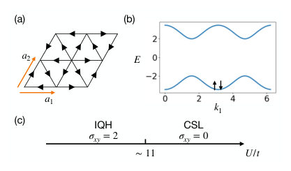
<figcaption class="paper-figure-caption"><b>Fig 1.</b> FIG. 1. Triangular-lattice Hofstadter-Hubbard model. (a) Gauge choice for the nearest-neighbor hopping shown in a 2 × 2 unit cell, a1 = (1, 0), and a2 = (1/2, √</figcaption>
</figure>
<figure class="paper-figure-card">
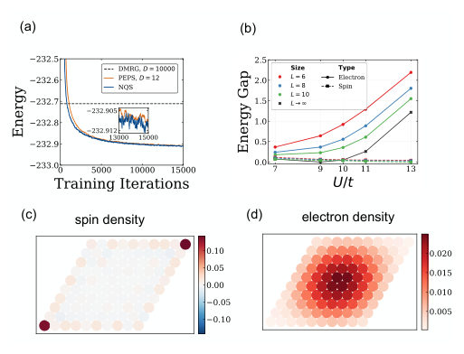
<figcaption class="paper-figure-caption"><b>Fig 2.</b> FIG. 2. Ground state and excited states with open bound- ary conditions. (a) Ground-state energy comparison among DMRG, PEPS, and NQS on an 8 × 8 system at U = 13. (b) Single-electron gap E0(N+1, Sz = 1/2)−E0(N, Sz = 0) (solid lines) and spin gap E0(N, Sz = 1) −E0(N, Sz = 0) (dashed lines) as functions of interaction strength U for L = 6 (green), L = 8 (blue), and L = 10 (red). The grey line represents the electron gap extrapolated to L →∞. (c,d) Spin den- sity and excess charge density of the lowest-energy state with one electron above half-filling at U = 13. The spin density is concentrated near the boundary, whereas the excess charge density is mainly distributed in the bulk, giving a...</figcaption>
</figure>
<figure class="paper-figure-card">
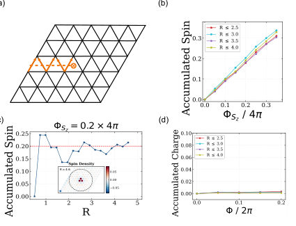
<figcaption class="paper-figure-caption"><b>Fig 3.</b> FIG. 3. Spin and charge pumping in the CSL phase at U = 13 with open boundary conditions. (a) Illustration of flux inser- tion. The flux is placed at the orange cross, and hoppings that cross the dashed branch cut acquire θij →θij +σzΦSz/2 for spin-flux insertion or θij →θij + Φ for charge-flux inser- tion. (b) Spin Sz(R) enclosed within radius R of the flux as a function of spin flux ΦSz on a 12 × 12 lattice. For 2 ≤R ≤4, the linear response approaches the quantized spin Hall con- ductance σs xy. (c) Radial profile of the accumulated spin at fixed spin flux ΦSz = 0.2 × 4π on a 12 × 12 cluster. The spin approaches the theoretical prediction before the circle reaches the boundary; the inset...</figcaption>
</figure>
<figure class="paper-figure-card">
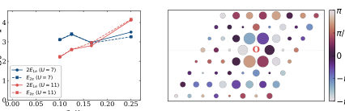
<figcaption class="paper-figure-caption"><b>Fig 4.</b> FIG. 5. Pair energy, single electron energy, and pair wave function near the IQH-CSL transition with periodic boundary conditions. (a) Size dependence of two times the charge-1e energy 2E1e = 2(E0(N + 1, Sz = 1/2) −E0(N, Sz = 0)) and charge-2e energy E2e = E0(N + 2, Sz = 0) −E0(N, Sz = 0). At U = 7, the positive binding energy observed on small clusters decreases with increasing system size and falls below numerical resolution on the largest clusters. Near the critical interaction, U = 11, the binding energy is consistent with zero for all sizes studied. (b) Spatial structure of the spin-singlet pair wave function ∆(r) = ⟨Ψ2e| (c† r↑c† 0↓−c† r↓c† 0↑) |ΨGS⟩for U = 11 and L = 8, showing the...</figcaption>
</figure>
<figure class="paper-figure-card">
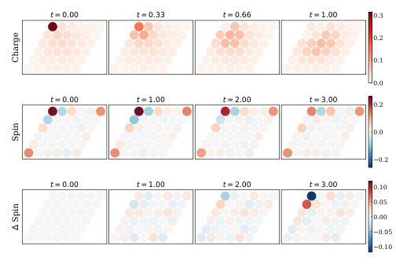
<figcaption class="paper-figure-caption"><b>Fig 5.</b> FIG. 4. Real-time PEPS dynamics of an injected electron in the CSL phase at U = 13 on a 6 × 6 cluster. The initial state contains one additional electron pinned near the upper-left corner by spin-dependent local attractive potentials h↑ pin = 4.4 and h↓ pin = 3.6. After the potential is removed at t = 0, the excess charge rapidly spreads into the bulk, while the spin density remains near the boundary and propagates along the edge. The contrasting charge and spin motion provides a direct dynamical signature of spin-charge separation.</figcaption>
</figure>
</div>

<p><strong>Summary.</strong> The paper investigates the chiral spin liquid phase in the triangular-lattice Hofstadter-Hubbard model using advanced quantum simulation methods. The authors demonstrate spin-charge separation by showing distinct real-space dynamics for spin and charge excitations. This work confirms the utility of NQS and PEPS as powerful tools for diagnosing topological order in strongly correlated electronic systems.</p>
<p><strong>Why it may be interesting.</strong> This work is highly relevant as it uses sophisticated numerical techniques (NQS/PEPS) to probe fractionalized excitations, a core topic in strongly correlated physics that often connects to emergent phenomena studied in AMO systems like Rydberg arrays or cold atom lattices.</p>
<details>
<summary>Detailed structure</summary>
<p><strong>Main problem.</strong> The study investigates spin-charge separation (fractionalization) within the context of a putative chiral spin liquid phase.</p>
<p><strong>Main result.</strong> The authors provide direct real-space evidence for spin-charge separation by observing that spin density localizes on the edge while excess charge diffuses into the bulk during time evolution simulations.</p>
<p><strong>Method.</strong> The research employs advanced quantum many-body techniques, specifically Variational Monte Carlo with Neural Quantum States (NQS) and Projected Entangled Pair States (PEPS), alongside real-time dynamics simulations.</p>
<p><strong>Model / system.</strong> The model is the triangular-lattice Hofstadter-Hubbard model, which is relevant to moiré materials and hosts potential chiral spin liquid phases. The Hamiltonian includes hopping terms modulated by a magnetic flux ($\Phi = \pi/2$ per triangle) and an onsite Hubbard interaction ($U$).</p>
<p><strong>Key observables.</strong> Spin Hall response ($\sigma^s_{xy}$), Charge Hall response ($\sigma_{xy}$), real-space spin density vs. charge density evolution, and two-electron binding energy.</p>
<p><strong>Important parameters / regimes.</strong> The key parameters are the hopping amplitude ($t$), the onsite interaction strength ($U$), and the magnetic flux $\Phi$. The analysis focuses on regimes around $U \approx 11$ where a transition to CSL is expected.</p>
<p><strong>Assumptions / limitations.</strong> The study assumes that NQS and PEPS can accurately diagnose topological order, although pairing evidence diminishes rapidly with system size, limiting conclusions about superconductivity in the thermodynamic limit.</p>
<p><strong>Figures summary.</strong> Figures illustrate gap closing/opening as a function of $U$ (Fig. 2(b)), show direct real-space separation of spin and charge densities (Fig. 2(c,d) &amp; Fig. 4), and demonstrate quantized spin pumping response upon flux insertion (Fig. 3).</p>
<p><strong>Paper structure.</strong> The paper first establishes the model and methods, then analyzes gap behavior across different coupling regimes ($U$). It proceeds to provide direct evidence for SCS via real-space simulations and quantifies topological properties using charge/spin pumping measurements.</p>
</details>
<details>
<summary>Abstract</summary>
<p>Recent experiments in moiré materials have enabled the realization of a variety of exotic quantum phases. In this context, the Hofstadter-Hubbard model has been proposed as a possible setting for hosting chiral spin liquid. Concurrently, significant progress has been recently made in the computational methods for two-dimensional many-body fermion systems, which makes numerically studying this challenging model a real possibility in genuine 2D geometry. Motivated by these advances, we investigate the putative chiral spin liquid phase in the triangular-lattice Hofstadter-Hubbard model using variational Monte Carlo with neural quantum states (NQS) and projected entangled pair states (PEPS). We observe spin-charge separation directly in real space through numerical spin-pumping simulation and real-time spin and charge motion. In addition, in the context of anyonic superconductivity conjectured in this model, we find a positive two-electron binding energy on small systems, but it decreases below our numerical resolution as the system size increases. Our work demonstrates NQS and PEPS as powerful tools, capable of cross-checking each other, for diagnosing topological order and fractionalized excitations in strongly correlated electronic systems.</p>
</details>
<p><sub><a href="#top">↑ back to top</a></sub></p>

<p><a id="paper-2608.03102"></a></p>
<h3 id="typical-output-states-of-monitored-random-clifford-circuits-a-graph-theoretic-approach"><a href="http://arxiv.org/abs/2608.03102v1">Typical Output States of Monitored Random Clifford Circuits: A Graph-Theoretic Approach</a></h3>
<p><strong>Authors:</strong> Yu-Xuan Zhang, Yu-Xiang Zhang<br>
<strong>Type:</strong> theory · <strong>Category:</strong> statistical mechanics · <strong>PDF:</strong> <a href="https://arxiv.org/pdf/2608.03102v1">https://arxiv.org/pdf/2608.03102v1</a><br>
<strong>Analysis basis:</strong> full PDF text, analyzed in chunks
<strong>Topic relevance:</strong> 🔥 <code>measurement-induced transitions</code> <strong>4/5</strong> · <code>driven-dissipative phase transition</code> <strong>3/5</strong> · <code>entanglement &amp; information structure</code> <strong>3/5</strong> · <code>non-equilibrium dynamics</code> <strong>2/5</strong> · <code>non-equilibrium universality</code> <strong>2/5</strong> · <code>correlated / nonlocal dissipation</code> <strong>1/5</strong> · <code>methods for driven-dissipative</code> <strong>1/5</strong> · <code>quantum measurements</code> <strong>1/5</strong></p>
<div class="figure-strip-hint">↔ Scroll figures horizontally</div>
<div class="paper-figures-scroll">
<figure class="paper-figure-card">
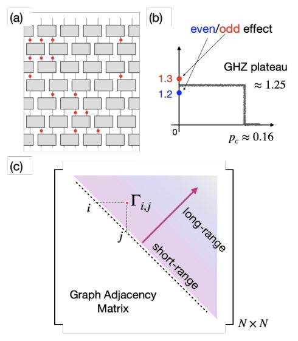
<figcaption class="paper-figure-caption"><b>Fig 1.</b> Figure 1. (a) Brickwork random Clifford circuits consists of local two-qubit Clifford gates interleaved with random single- qubit Pauli Z measurements (red dots). (b) Schematic of the GHZ-entanglement content as a function of the measurement rate p in monitored circuits: An even–odd effect at p = 0 and a plateau ⟨g3⟩≈1.25 in bulk of the volume-law phase. (c) Our primary theoretical tool is the graph adjacency matrix (Γ) for the output stabilizer states. In the large-N limit, the statis- tics of such adjacency matrix determines the distribution of stabilizer states sampled by the monitored random Clifford circuits. Due to translational invariance in the bulk of the system, matrix elements...</figcaption>
</figure>
<figure class="paper-figure-card">
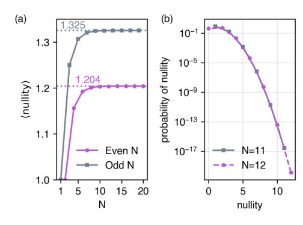
<figcaption class="paper-figure-caption"><b>Fig 2.</b> Figure 2. (a) The dependence of the expectation value of ⟨dim ker Γ⟩on qubit number N. Already at N = 10, the result coincides well with the asymptotic limit (dotted lines). (b) The distribution of nullity for N = 11 and 12.</figcaption>
</figure>
<figure class="paper-figure-card">
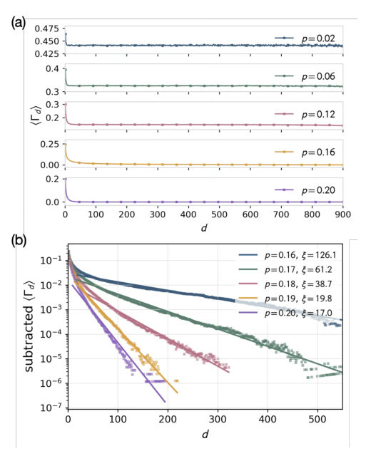
<figcaption class="paper-figure-caption"><b>Fig 3.</b> Figure 3. (a) Averaged edge density (AED) for N = 1000 qubits and values of p detailed in the plots. Graphs of the volume-law phase (p = 0.02, 0.06, 0.12) have a homogeneous long-range AED ⟨Γd⟩&gt; 0, which drops to zero near the criti- cal point (p = 0.16) and in the area-law phase (p = 0.20). (b) The decay of AED ⟨Γd⟩subtracted by the long-range AED in the area-law phase. The data fit into the exponential form exp(−d/ξ).</figcaption>
</figure>
<figure class="paper-figure-card">
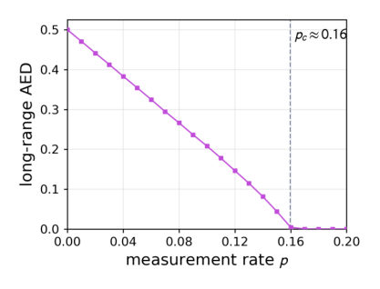
<figcaption class="paper-figure-caption"><b>Fig 4.</b> Figure 4. The homogeneous long-range AED decays as a func- tion of measurement rate p almost linearly.</figcaption>
</figure>
<figure class="paper-figure-card">
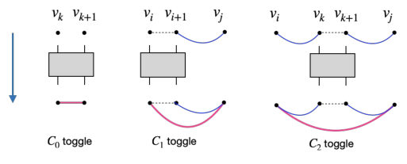
<figcaption class="paper-figure-caption"><b>Fig 5.</b> Figure 5. Schematic illustrating the three types of edge tog- gles and the typical configurations through which a new edge (red) is established. Time evolves downward. Dashed lines represent edges whose existence is conditional.</figcaption>
</figure>
</div>

<p><strong>Summary.</strong> The paper analyzes monitored random Clifford circuits by mapping their output states onto graph structures. Using this graph-theoretic approach, the authors derive analytical results for entanglement measures like GHZ content and identify an emergent, smaller unitary subsystem in the volume-law phase. This work successfully locates the critical point of the measurement-induced phase transition using mean-field theory on the underlying random graph ensemble.</p>
<p><strong>Why it may be interesting.</strong> This work provides a powerful, concrete link between random graph theory (a statistical mechanics tool) and non-equilibrium quantum dynamics, offering structural insights into how measurement processes constrain complex quantum states.</p>
<details>
<summary>Detailed structure</summary>
<p><strong>Main problem.</strong> The paper aims to develop a graph-theoretic framework to directly characterize the typical output states of monitored random Clifford circuits, moving beyond traditional entanglement measures.</p>
<p><strong>Main result.</strong> They found that in the volume-law phase, the output state is equivalent to a unitary circuit on an emergent dense subgraph ($G(N_{\text{sub}}, 1/2)$), and they analytically determined the critical point of the Measurement-Induced Phase Transition (MIPT) at $p_c = 0.1608$.</p>
<p><strong>Method.</strong> The core method involves mapping the output stabilizer states to graph states characterized by an adjacency matrix ($\Gamma$), allowing for large-$N$ limit analysis and mean-field calculations.</p>
<p><strong>Model / system.</strong> The system is a monitored random Clifford circuit, which serves as a model for non-equilibrium quantum many-body dynamics. The state structure is analyzed using graph theory representations of stabilizer states.</p>
<p><strong>Key observables.</strong> GHZ entanglement content ($\langle g_3 \rangle$), bipartite entanglement (entropy), and the structure/density of the emergent subgraph within the output state graph.</p>
<p><strong>Important parameters / regimes.</strong> The measurement probability ($p$) which controls the transition between volume-law and area-law entanglement regimes, and the system size ($N$).</p>
<p><strong>Assumptions / limitations.</strong> The analysis relies on the large-$N$ limit convergence to the Erdős–Rényi random graph ensemble $G(N, 1/2)$, and that local Clifford operations can be mapped onto graph complementation rules.</p>
<p><strong>Figures summary.</strong> Figure 1 illustrates the circuit setup with measurements; Figure 1(b) shows the even-odd effect in GHZ content vs. measurement rate $p$; and Figure 1(c) depicts how edge correlations decay with distance on the graph.</p>
<p><strong>Paper structure.</strong> The paper first introduces the model and the limitations of previous entropy-based methods, then develops the graph-state framework to analyze output states, derives analytical results for GHZ content and subgraph structure in specific phases, and finally uses mean-field theory to locate the MIPT critical point.</p>
</details>
<details>
<summary>Abstract</summary>
<p>Monitored random Clifford circuit is a paradigmatic platform for exploring non-equilibrium quantum many-body dynamics using quantum-information methods. It is well-known for exhibiting a measurement-induced phase transition (MIPT) between volume-law and area-law phases of bipartite entanglement. In this Article, we develop a graph-state based framework that grants direct access to the typical output states of monitored random Clifford circuits. We first show that, in the large-$N$ limit, where $N$ denotes qubit number, the graph representations of random stabilizer states converge to the Erdős--Rényi random graph ensemble $G(N,1/2)$. This observation allows us to resolve the open problem of Greenberger--Horne--Zeilinger (GHZ) entanglement in random stabilizer states. We derive analytically the mean GHZ content, $\langle g_3\rangle=1.204$ for even $N$ and $1.325$ for odd $N$. For monitored one dimensional (1D) circuits in the volume-law phase, we uncover an emergent dense subgraph of the form $G(N_{\mathrm{sub}},1/2)$ in the output-state graphs. This implies that the output state of a monitored circuit is equivalent to an output of a unitary circuit on $N_{\mathrm{sub}}$ qubits, weakly perturbed by the remaining $N-N_{\mathrm{sub}}$ qubits carrying little entanglement. This result directly accounts for the quantum error-correcting capability of the volume-law phase. We further identify a clustering effect in the spatial distribution of the dense subgraph along the 1D qubit chain, and reproduce it with an infection-recovery toy model that exhibits a measurement-induced absorbing-state phase transition. Finally, we locate the critical point of the MIPT at $p_c = 0.1608$ through a mean-field argument on the graph, in excellent agreement with the numerical result $p_c\approx 0.16$.</p>
</details>
<p><sub><a href="#top">↑ back to top</a></sub></p>

<p><a id="paper-2608.03012"></a></p>
<h3 id="on-chip-generation-of-multi-qubit-graph-states-with-high-dimensional-encoded-single-photons"><a href="http://arxiv.org/abs/2608.03012v1">On-chip generation of multi-qubit graph states with high-dimensional encoded single photons</a></h3>
<p><strong>Authors:</strong> Lan-Tian Feng, Bo-Hao Zhang, Di Liu, Pan Gong, Yu-Yang Ding, Guo-Ping Guo, Guang-Can Guo, Xi-Feng Ren<br>
<strong>Type:</strong> experiment · <strong>Category:</strong> quantum information and computing · <strong>PDF:</strong> <a href="https://arxiv.org/pdf/2608.03012v1">https://arxiv.org/pdf/2608.03012v1</a><br>
<strong>Analysis basis:</strong> full PDF text, analyzed in chunks
<strong>Topic relevance:</strong> 🔥 <code>QC/QI experiment</code> <strong>4/5</strong> · <code>quantum optics experiment</code> <strong>3/5</strong> · <code>entanglement &amp; information structure</code> <strong>2/5</strong> · <code>measurement-induced transitions</code> <strong>2/5</strong> · <code>quantum measurements</code> <strong>2/5</strong> · <code>analog quantum simulation</code> <strong>1/5</strong> · <code>interference shaping light</code> <strong>1/5</strong> · <code>non-equilibrium dynamics</code> <strong>1/5</strong></p>
<div class="figure-strip-hint">↔ Scroll figures horizontally</div>
<div class="paper-figures-scroll">
<figure class="paper-figure-card">
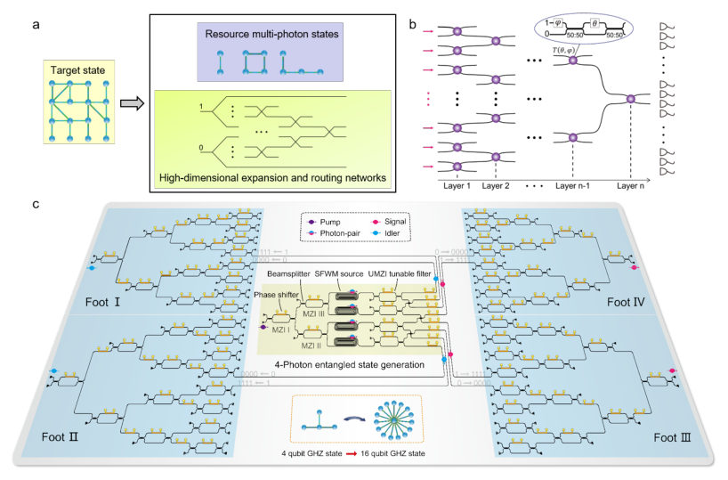
<figcaption class="paper-figure-caption"><b>Fig 1.</b> FIG. 1: Conceptual illustration of the proposed approach and circuit. a, To prepare the target state, we can select appropriate resource multi-photon states and deploy customized high-dimensional expansion and routing networks. b, The layer-by-layer qubit measurement scheme. For n-qubit quantum state preparation with single photons, a n-layer measurement structure is arranged, and each layer can achieve complete measurement of the corresponding qubit. c, The schematic diagram of photonic integrated circuit for 4-photon 16-qubit GHZ state preparation. Owing to the consistency in the forms of GHZ states with different qubit numbers, high-dimensional expansion and routing operations are...</figcaption>
</figure>
<figure class="paper-figure-card">
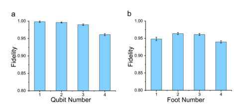
<figcaption class="paper-figure-caption"><b>Fig 2.</b> FIG. 2: Results of the single-photon multi-qubit GHZ state. a, The fidelity of single-photon encoded GHZ state with different qubit numbers. b, The fidelity of single-photon encoded 4-qubit GHZ state with different measurement modules (Foots I-IV). The errors are ob- tained from 300 simulation calculations with the experimental data subjected to Gaussian statics.</figcaption>
</figure>
<figure class="paper-figure-card">
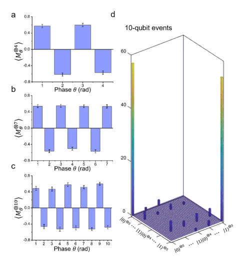
<figcaption class="paper-figure-caption"><b>Fig 3.</b> FIG. 3: Results of the four-photon multi-qubit GHZ state. a-c, The expectation values of Mk for the 4-qubit (a), 7-qubit (b) and 10-qubit (c) GHZ state. The coherence values of the 4-qubit, 7- qubit, and 10-qubit GHZ states are calculated to be 0.589(0.020), 0.543(0.015), and 0.516(0.014), respectively. d, Fourfold coinci- dence counts measured in the 0/1 basis for the 10-qubit GHZ state. The populations of the |0⟩⊗10 and |1⟩⊗10 terms are calculated to be 0.815(0.024).</figcaption>
</figure>
<figure class="paper-figure-card">
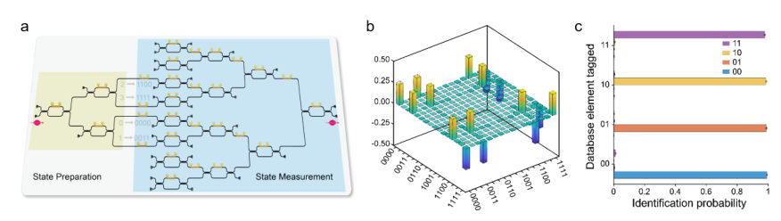
<figcaption class="paper-figure-caption"><b>Fig 4.</b> FIG. 4: Results of the single-photon 4-qubit cluster state. a, The schematic diagram of photonic integrated circuit for single-photon 4-qubit cluster state preparation. The four path dimensions are relabeled, each corresponding to a product term of the cluster state. b, Real part of the measured density matrix of the cluster state. Crystal clear bars represent the density matrix for the ideal cluster state. The imaginary part of the measured density matrix is negligible. c, The identification probability for different labeled elements.</figcaption>
</figure>
</div>

<p><strong>Summary.</strong> The paper presents an advanced method for creating complex multi-qubit entangled states, such as GHZ and cluster states, using single photons on integrated optical chips. By employing high-dimensional encoding instead of direct multi-photon generation, the authors achieve high fidelity across up to 10 qubits. This work advances scalable photonic quantum information processing by demonstrating both state preparation and algorithmic execution (Grover's search).</p>
<p><strong>Why it may be interesting.</strong> This work provides a concrete, scalable platform demonstration for photonic quantum computation by addressing the resource limitations inherent in multi-photon sources, which is highly relevant to experimental quantum optics and networking research.</p>
<details>
<summary>Detailed structure</summary>
<p><strong>Main problem.</strong> The primary challenge is generating high-fidelity multi-qubit graph states necessary for universal quantum computation using photonic systems, circumventing the low efficiency of traditional multi-photon sources.</p>
<p><strong>Main result.</strong> The authors successfully generated and characterized high-fidelity GHZ states up to 10 qubits and a single-photon 4-qubit cluster state on an integrated chip. They also demonstrated Grover's search algorithm using this photonic resource.</p>
<p><strong>Method.</strong> They propose replacing complex multi-photon preparation with resource-efficient single-photon operations involving high-dimensional encoding, routing, and layer-by-layer quantum measurement schemes.</p>
<p><strong>Model / system.</strong> The experiment is performed on programmable photonic integrated circuits (silicon photonics) using pulsed lasers at 1550.12 nm. The system utilizes high-dimensional encoding via path degrees of freedom to encode multiple qubits within single photons.</p>
<p><strong>Key observables.</strong> Fidelity ($F$), Entanglement Witness values ($\langle 	ext{W}_{Gm} 
angle$), and the identification probability for Grover's search.</p>
<p><strong>Important parameters / regimes.</strong> The largest demonstrated state was a 10-qubit GHZ state, with fidelity reaching $0.961(0.003)$ for 4 qubits; cluster state fidelity reached $0.991(0.004)$.</p>
<p><strong>Assumptions / limitations.</strong> The approach assumes the feasibility of high-dimensional encoding and relies on quantum state tomography and entanglement witness measurements for verification.</p>
<p><strong>Figures summary.</strong> Figures show measured fidelities for GHZ states across varying qubit numbers, entanglement witness values confirming genuine multipartite entanglement (violating classical bounds), and the identification probability achieved during a Grover search demonstration.</p>
<p><strong>Paper structure.</strong> The paper details the conceptual framework of single-photon high-dimensional encoding, presents experimental results on generating and characterizing multi-qubit graph states (GHZ/cluster) using integrated photonics, and concludes with demonstrations of quantum algorithms like Grover's search.</p>
</details>
<details>
<summary>Abstract</summary>
<p>Photonic multi-qubit entanglement is key to optical quantum information processing, particularly universal quantum computing. Yet multi-photon sources suffer from low emission efficiency, making single-photon high-dimensional encoding an appealing alternative. Here we propose an explicit and resource-efficient high-dimensional encoding approach to achieve the target multi-qubit quantum state. The technically challenging preparation of multi-photon quantum states is replaced by single-photon operations involving high-dimensional expansion, routing, and multi-layered quantum measurement. Besides, each photon in the resource multi-photon quantum state can be used to encode multiple qubits in a distributed manner, and a larger entangled state will be constructed. We demonstrate this approach using programmable photonic integrated circuits, where multi-qubit graph states--including the Greenberger-Horne-Zeilinger state and the cluster state--are generated and characterized. We additionally demonstrate the Grover search algorithm using the single-photon cluster state. Our findings unlock a novel route towards diverse entangled state generation with photons and advance large-scale and universal photonic quantum information processing.</p>
</details>
<p><sub><a href="#top">↑ back to top</a></sub></p>

<p><a id="paper-2608.03402"></a></p>
<h3 id="on-chip-quantum-measurement-of-squeezing-generated-from-a-silicon-nitride-micro-ring-resonator"><a href="http://arxiv.org/abs/2608.03402v1">On-chip Quantum Measurement of Squeezing Generated from a Silicon Nitride Micro-ring Resonator</a></h3>
<p><strong>Authors:</strong> Yuhang Lei, Chenfei Cui, Yue Li, Hon Ki Tsang, Z. Y. Ou<br>
<strong>Type:</strong> experiment · <strong>Category:</strong> quantum information and computing · <strong>PDF:</strong> <a href="https://arxiv.org/pdf/2608.03402v1">https://arxiv.org/pdf/2608.03402v1</a><br>
<strong>Analysis basis:</strong> full PDF text, analyzed in chunks
<strong>Topic relevance:</strong> 🔥 <code>quantum optics experiment</code> <strong>4/5</strong> · <code>quantum measurements</code> <strong>3/5</strong> · <code>QC/QI experiment</code> <strong>2/5</strong> · <code>measurement-induced transitions</code> <strong>2/5</strong> · <code>analog quantum simulation</code> <strong>1/5</strong> · <code>correlated / nonlocal dissipation</code> <strong>1/5</strong> · <code>correlated cavity matter</code> <strong>1/5</strong> · <code>driven-dissipative phase transition</code> <strong>1/5</strong> · <code>interference shaping light</code> <strong>1/5</strong></p>
<div class="figure-strip-hint">↔ Scroll figures horizontally</div>
<div class="paper-figures-scroll">
<figure class="paper-figure-card">
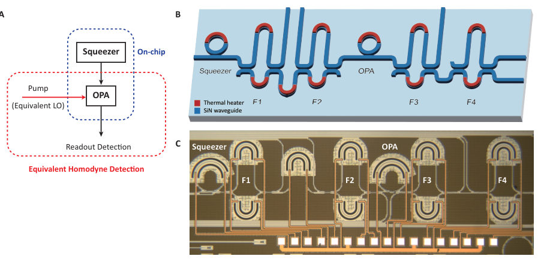
<figcaption class="paper-figure-caption"><b>Fig 1.</b> Figure 1: Concept and device architecture of on-chip parametric-amplifier-assisted quantum</figcaption>
</figure>
<figure class="paper-figure-card">
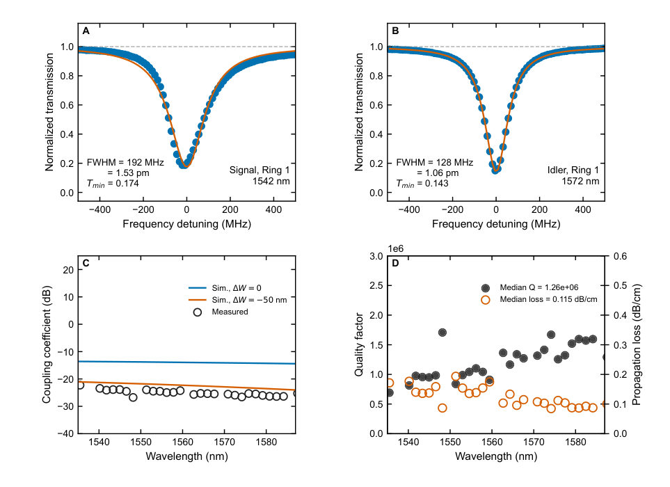
<figcaption class="paper-figure-caption"><b>Fig 2.</b> Figure 2: Ring linear characterization. (A)(B) Measured transmission spectrum at signal wave-</figcaption>
</figure>
<figure class="paper-figure-card">
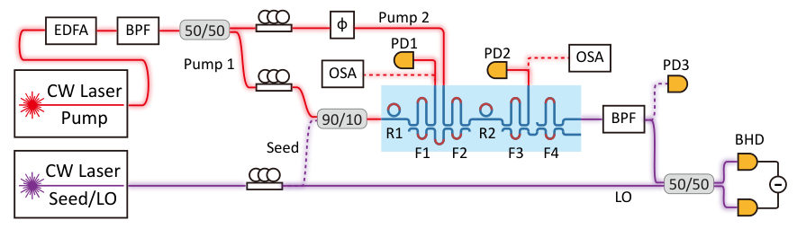
<figcaption class="paper-figure-caption"><b>Fig 3.</b> Figure 3: Experimental setup. The blue box encloses the on-chip device, which consists of two</figcaption>
</figure>
<figure class="paper-figure-card">
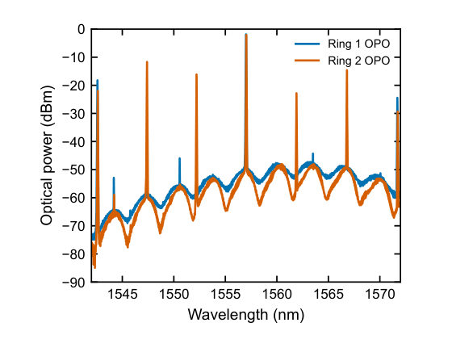
<figcaption class="paper-figure-caption"><b>Fig 4.</b> Figure 4: OPO characterization. Overlap between the OPO spectra of the two micro-ring res-</figcaption>
</figure>
<figure class="paper-figure-card">
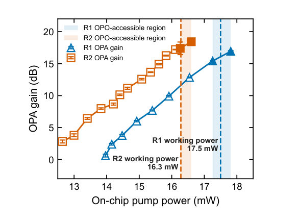
<figcaption class="paper-figure-caption"><b>Fig 5.</b> Figure 5: OPA gain characterization. Measured OPA gain versus on-chip pump power for R1</figcaption>
</figure>
</div>

<p><strong>Summary.</strong> The paper addresses the critical issue of signal degradation due to coupling losses when measuring quantum light states on photonic chips. The authors propose and experimentally demonstrate an 'on-chip quantum measurement' technique using cascaded silicon nitride micro-ring resonators acting as a squeezer followed by a parametric amplifier. This method successfully measures significant squeezing (4.6 dB) even with substantial external optical loss, establishing a scalable platform for integrated quantum sensing.</p>
<p><strong>Why it may be interesting.</strong> This work provides a crucial engineering solution to a major bottleneck in integrated quantum photonics—loss. By showing how amplification can circumvent loss limitations, it paves a practical path for scaling quantum sensors onto chips.</p>
<details>
<summary>Detailed structure</summary>
<p><strong>Main problem.</strong> The primary challenge is that coupling losses between on-chip quantum optical components and off-chip detectors destroy fragile quantum correlations, limiting the observable squeezing.</p>
<p><strong>Main result.</strong> The authors successfully demonstrated a 4.6 dB quantum noise reduction despite exceeding 5 dB of chip-to-fiber coupling loss by implementing an on-chip measurement scheme.</p>
<p><strong>Method.</strong> They utilized a two-stage system: one micro-ring resonator generates the squeezed state, and a second ring acts as a high-gain parametric amplifier (OPA) to measure this state before significant external loss occurs.</p>
<p><strong>Model / system.</strong> The physical platform is an integrated silicon nitride (SiN) photonic chip containing two cascaded micro-ring resonators. The system functions as a monolithic SU(1,1) interferometer when used for sensing.</p>
<p><strong>Key observables.</strong> Quantum noise reduction (measured in dB), interference fringe visibility, and the measured squeezing level relative to vacuum noise.</p>
<p><strong>Important parameters / regimes.</strong> Chip-to-fiber coupling loss (&gt;5 dB); observed quantum noise reduction (4.6 dB); high gain regime of the OPA ($G \gg 1$).</p>
<p><strong>Assumptions / limitations.</strong> The measurement is inherently loss-tolerant because the amplifier elevates the quantum noise floor above vacuum levels, making detection insensitive to downstream losses.</p>
<p><strong>Figures summary.</strong> Figures illustrate the conceptual schematic (Squeezer $
ightarrow$ OPA), the device structure on SiN, and crucially, the measured quantum noise spectra comparing squeezed vs. vacuum states under varying pump phases.</p>
<p><strong>Paper structure.</strong> The paper establishes the problem of loss in chip-based quantum optics, proposes the parametric amplifier assisted measurement scheme (SU(1,1) interferometer), details the experimental implementation on SiN rings, and presents quantitative measurements demonstrating noise reduction despite high coupling losses.</p>
</details>
<details>
<summary>Abstract</summary>
<p>Integration of quantum optical technique on-chip is crucial for large scale applications of quantum technology, which were proven in a free space environment to be superior to the corresponding classical technology. Squeezed states of light can be used for enhancing the sensitivity of quantum sensors and for fault-tolerant quantum computing. Although chip-based squeezed light generation has advanced significantly, practical impact remains limited because coupling losses between the chip and off-chip detectors destroy delicate quantum correlations, restricting the amount of observed squeezing. Here, we overcome this limitation by implementing the idea of on-chip quantum measurement with the aid of a parametric amplifier and applying it to the squeezed state generated by a silicon nitride (SiN) microring resonator. In our scheme, two matched SiN micro-rings are sequentially constructed. The first ring generates a squeezed state, whereas the second ring acts as a high-gain parametric amplifier (PA) that measures the squeezed state before the light experiences significant off-chip loss. This architecture is inherently loss-tolerant: the amplifier elevates the quantum noise well above the vacuum level, making the measurement insensitive to downstream losses. We directly observe a quantum noise reduction of 4.6 dB from the first ring, despite a chip-to-fiber coupling loss exceeding 5 dB. This work also demonstrates the first monolithic SU(1,1) interferometer with an estimated 5 dB signal-to-noise enhancement compared to traditional linear interferometers, and thus establishes a practical pathway for chip-based quantum sensors.</p>
</details>
<p><sub><a href="#top">↑ back to top</a></sub></p>

<p><a id="paper-2608.02846"></a></p>
<h3 id="a-first-principles-computational-framework-for-quantum-decoherence-in-complex-diamond-spin-environments"><a href="http://arxiv.org/abs/2608.02846v1">A First-principles Computational Framework for Quantum Decoherence in Complex Diamond Spin Environments</a></h3>
<p><strong>Authors:</strong> Huijin Park, Ha-young Jeong, Hyeonsu Kim, Christoph Findler, Fedor Jelezko, Sangwon Oh, Junghyun Lee, Giulia Galli, Hosung Seo<br>
<strong>Type:</strong> both · <strong>Category:</strong> quantum information and computing · <strong>PDF:</strong> <a href="https://arxiv.org/pdf/2608.02846v1">https://arxiv.org/pdf/2608.02846v1</a><br>
<strong>Analysis basis:</strong> full PDF text, analyzed in chunks
<strong>Topic relevance:</strong> 🔥 <code>QC/QI experiment</code> <strong>4/5</strong> · 🔥 <code>spintronics-quantum-optics interface</code> <strong>4/5</strong> · <code>Keldysh / 2PI / non-Gaussian methods</code> <strong>1/5</strong> · <code>Kondo &amp; dissipative impurity</code> <strong>1/5</strong> · <code>analog quantum simulation</code> <strong>1/5</strong> · <code>correlated / nonlocal dissipation</code> <strong>1/5</strong> · <code>exotic spin models in light-matter</code> <strong>1/5</strong> · <code>methods for driven-dissipative</code> <strong>1/5</strong> · <code>non-equilibrium dynamics</code> <strong>1/5</strong></p>
<div class="figure-strip-hint">↔ Scroll figures horizontally</div>
<div class="paper-figures-scroll">
<figure class="paper-figure-card">
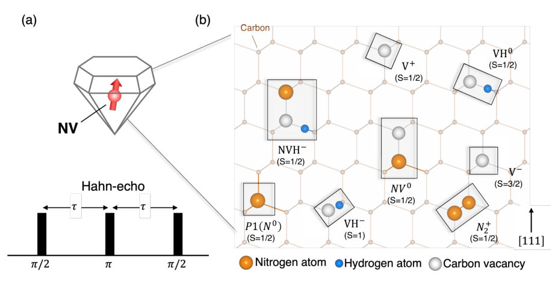
<figcaption class="paper-figure-caption"><b>Fig 1.</b> Figure 1. Paramagnetic defects in diamond and central spin model. (a) Schematic of the negatively charged nitrogen-vacancy in diamond subject to a Hahn-echo pulse sequence. (b) Representative paramagnetic defects considered in this study. Brown, blue, white, and orange spheres denote carbon, hydrogen, vacancies, and nitrogen atoms, respectively. An external magnetic field is applied along the [111] crystallographic axis.</figcaption>
</figure>
<figure class="paper-figure-card">
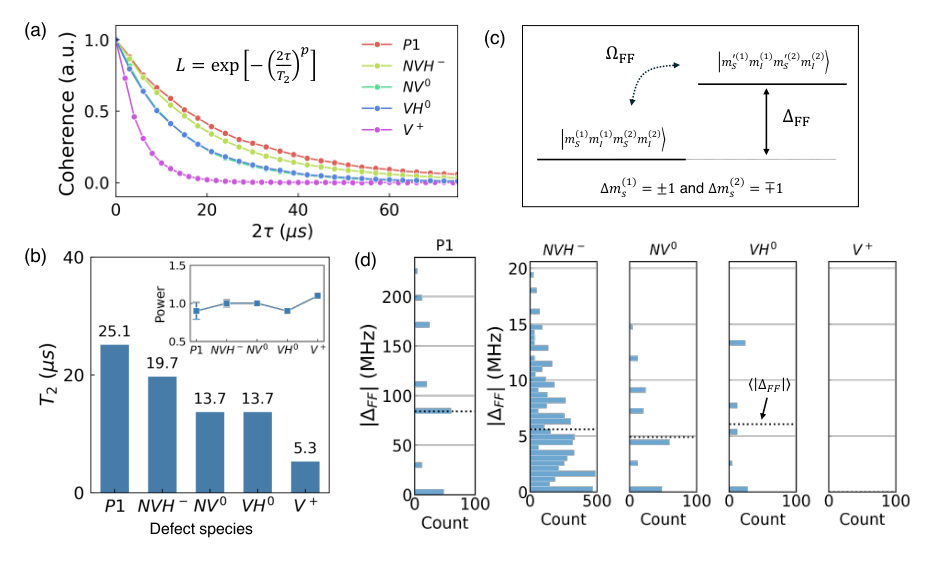
<figcaption class="paper-figure-caption"><b>Fig 2.</b> Figure 2. NV decoherence in homogeneous PM defect baths. (a) Computed coherence functions of NV centers in homogenous defect baths with a defect concentration of 12 ppm under a magnetic field of 322.7 G. (b) Extracted 𝑻𝟐 and 𝒑 (inset) parameters for each bath. They are obtained by fitting the coherence functions L using a stretched exponential decay model. (c) Energy-level diagram illustrating electron-spin flip-flop transitions within a defect</figcaption>
</figure>
<figure class="paper-figure-card">
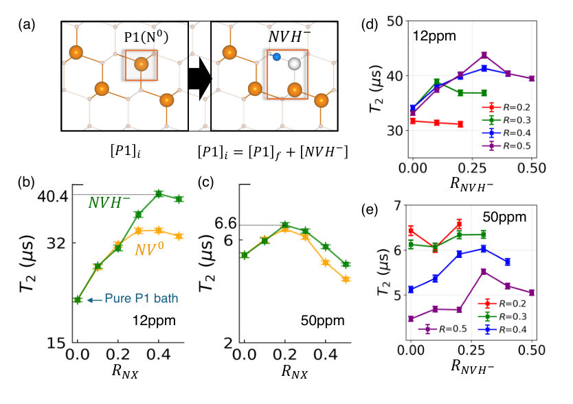
<figcaption class="paper-figure-caption"><b>Fig 3.</b> Figure 3. Variation of the coherence time T2 in the defect conversion model (a) Schematic of the defect conversion model illustrating the transformation of P1 centers into other N-related defects (e.g. 𝑁𝑉𝐻!). Orange, white and blue ball denote nitrogen atom, carbon vacancy and hydrogen atom respectively. The orange box indicates a site converted defect from P1 to 𝑁𝑉𝐻!. (b, c) Computed 𝑇&quot; values in two-species mixed bath as a function of the conversion ratio 𝑅*P, for (b) [𝑃1]/ = 12 ppm and (c) [𝑃1]/ = 50 ppm. (d, e) 𝑇&quot; values in three-species mixed bath (𝑃1- 𝑁𝑉$-𝑁𝑉𝐻!) as a function of 𝑅*+Q! for (d) [𝑃1]/ = 12 ppm and (e) [𝑃1]/ = 50 ppm. The total conversion ratio 𝑅= 𝑅*+# + 𝑅*+Q! is varied...</figcaption>
</figure>
<figure class="paper-figure-card">
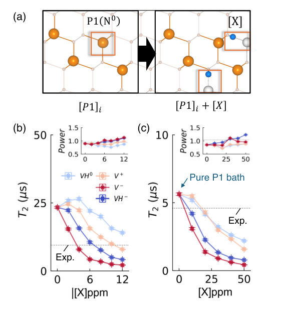
<figcaption class="paper-figure-caption"><b>Fig 4.</b> Figure 4. Variation of the coherence time 𝑻𝟐 in extra defect model (a) Schematic of the extra defect model. Orange boxes labeled [𝑿] represent V/H-related defects introduced into the bath. (b, c) Computed 𝑻𝟐 and 𝒑 values as a function of [𝑿] for (b) [𝑷𝟏]𝒊 = 12 ppm and (c) [𝑷𝟏]𝒊= 50 ppm. Black dotted lines indicate experimentally extracted 𝑻𝟐 and 𝒑 values. Experimental details are described in a later section.</figcaption>
</figure>
<figure class="paper-figure-card">
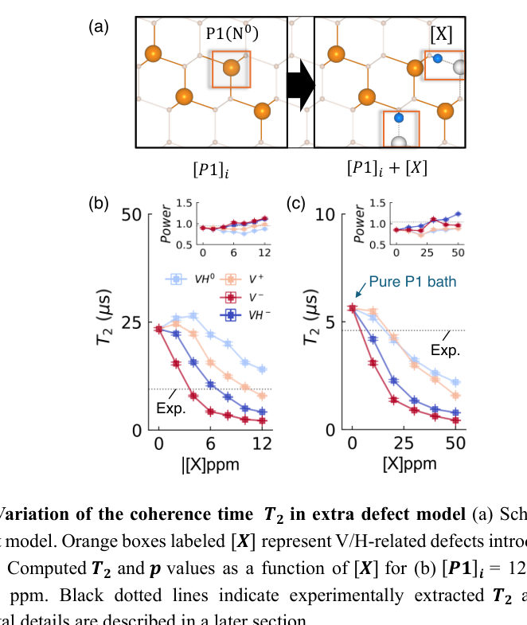
<figcaption class="paper-figure-caption"><b>Fig 5.</b> Figure 4b, and 4c show 𝑇&quot; as a function of the V/H-related defect concentration [X], which is</figcaption>
</figure>
</div>

<p><strong>Summary.</strong> This work introduces a first-principles computational framework to accurately model quantum decoherence in diamond by treating complex, heterogeneous defect environments. By combining DFT with spin-bath simulations, the authors show that individual defect types critically influence coherence times, offering a predictive tool for optimizing quantum materials.</p>
<p><strong>Why it may be interesting.</strong> It provides a crucial link between atomistic material science (DFT of defect structure) and fundamental quantum dynamics (decoherence), which is vital for designing robust solid-state qubits.</p>
<details>
<summary>Detailed structure</summary>
<p><strong>Main problem.</strong> Predicting quantum decoherence in realistic solid-state materials is computationally challenging because complex defect environments are often inaccurately modeled as simple homogeneous spin baths.</p>
<p><strong>Main result.</strong> The study demonstrates that decoherence depends critically on the specific identity and composition of defects, showing that heterogeneous bath effects can significantly alter coherence times compared to predictions from simpler models.</p>
<p><strong>Method.</strong> A predictive framework combining first-principles electronic structure calculations (DFT) with quantum many-body spin-bath simulations is developed and validated against magnetic-field-dependent Hahn-echo measurements.</p>
<p><strong>Model / system.</strong> The system uses diamond containing Nitrogen-Vacancy (NV) ensembles as the central qubit, interacting with a heterogeneous bath of multiple paramagnetic defects (e.g., N-, V-, H-related species).</p>
<p><strong>Key observables.</strong> Quantum coherence time ($T_2^*$), decoherence decay behavior (stretched exponential), and field dependence.</p>
<p><strong>Important parameters / regimes.</strong> Defect identity, defect concentration, hyperfine interaction parameters, and magnetic field strength.</p>
<p><strong>Assumptions / limitations.</strong> The framework moves beyond homogeneous bath approximations by incorporating defect-resolved spin Hamiltonians and heterogeneous interactions.</p>
<p><strong>Figures summary.</strong> Figure 1 schematically illustrates the central spin model used to compute decoherence dynamics of an NV center interacting with a PM defect spin bath environment.</p>
<p><strong>Paper structure.</strong> The paper develops a computational framework, applies it to model decoherence in diamond using various defects, and validates its predictions by reproducing experimental coherence times across different magnetic fields.</p>
</details>
<details>
<summary>Abstract</summary>
<p>Quantum decoherence induced by defects remains a major limitation for solid-state quantum technologies, yet predicting decoherence in realistic materials remains computationally challenging. Complex defect populations are often approximated as homogeneous spin baths, obscuring the role of defect-specific electronic structure and spin dynamics. Here, we develop a predictive framework for decoherence in diamond by combining first-principles electronic-structure calculations, quantum many-body spin-bath simulations, and experimental validation. The framework incorporates defect-resolved spin Hamiltonians and heterogeneous spin baths containing multiple paramagnetic defect species. Using diamond nitrogen-vacancy ensembles as a model platform, we investigate mixed nitrogen-, vacancy-, and hydrogen-related defect environments. We show that decoherence depends not only on defect density but also on defect identity and bath composition, whose distinct electronic structures, hyperfine interactions, and spin dynamics produce different coherence behavior. Heterogeneous defect populations can either suppress or enhance decoherence, producing trends unexplained by homogeneous-bath models. Magnetic-field-dependent Hahn-echo measurements on samples with different defect concentrations validate the framework. The calculations reproduce the observed coherence times and stretched-exponential decay behavior across a broad magnetic-field range and identify vacancy-related defects as critical contributors beyond the conventionally assumed P1 spin bath. By linking atomistic defect properties to quantum coherence, our framework provides a predictive route for identifying hidden defect environments and optimizing decoherence in defect-based quantum materials.</p>
</details>
<p><sub><a href="#top">↑ back to top</a></sub></p>

<p><a id="paper-2608.03944"></a></p>
<h3 id="exact-tradeoff-between-quantum-error-correction-and-quantum-darwinism-an-information-theoretic-no-go-theorem"><a href="http://arxiv.org/abs/2608.03944v1">Exact Tradeoff Between Quantum Error Correction and Quantum Darwinism: An Information-Theoretic No-Go Theorem</a></h3>
<p><strong>Authors:</strong> Arghya Maity, Kelvin Onggadinata, Teck Seng Koh<br>
<strong>Type:</strong> theory · <strong>Category:</strong> quantum information and computing · <strong>PDF:</strong> <a href="https://arxiv.org/pdf/2608.03944v1">https://arxiv.org/pdf/2608.03944v1</a><br>
<strong>Analysis basis:</strong> full PDF text, analyzed in chunks
<strong>Topic relevance:</strong> 🔥 <code>entanglement &amp; information structure</code> <strong>4/5</strong> · <code>correlated / nonlocal dissipation</code> <strong>3/5</strong> · <code>methods for driven-dissipative</code> <strong>3/5</strong> · <code>driven-dissipative phase transition</code> <strong>2/5</strong> · <code>Keldysh / 2PI / non-Gaussian methods</code> <strong>1/5</strong> · <code>non-equilibrium dynamics</code> <strong>1/5</strong> · <code>non-equilibrium universality</code> <strong>1/5</strong></p>
<div class="figure-strip-hint">↔ Scroll figures horizontally</div>
<div class="paper-figures-scroll">
<figure class="paper-figure-card">
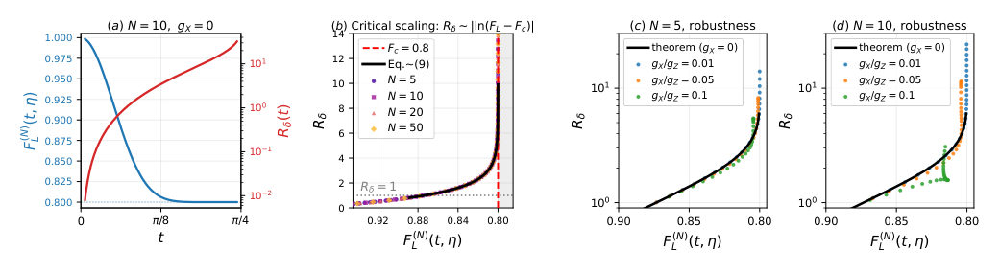
<figcaption class="paper-figure-caption"><b>Fig 1.</b> FIG. 1. Numerical results for the Darwinism–QEC competition (gZ = 1, η = 0.6, δ = 0.10). (a) Competition in time for N = 10, gX = 0. Blue curve (left axis): logical fidelity F (N) L (t, η), decaying monotonically from unity toward the floor Fc = (1 + η)/2 = 0.8 (dotted line). Red curve (right axis, log scale): Darwinistic redundancy Rδ(t), rising simultaneously. Solid lines are the closed-form analytical predictions Eqs. (5) and (8); exact diagonalization data (not shown separately) agrees to these. (b) Critical Darwinism–QEC scaling. Rδ is plotted against the logical fidelity F (N) L on linear axes for N = 5, 10, 20, 50 (colored points). The black curve is the exact tradeoff (Eq. (9))....</figcaption>
</figure>
<figure class="paper-figure-card">
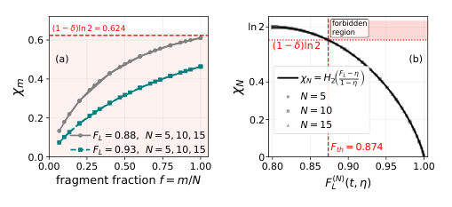
<figcaption class="paper-figure-caption"><b>Fig 2.</b> FIG. 2. Numerical confirmation of the no-go theorem , δ = 0.10, η = 0.60). (a) Fragment Holevo information χm as a function of the fragment fraction f = m/N, computed for N = 5, 10, 15 at two representative logical fidelities FL = 0.88 and FL = 0.93, both lying above the no-go threshold Fth = 0.874. Every curve remains strictly below the Darwinism threshold (1 −δ) ln 2 = 0.624 nat (red dashed line) for all fragment sizes m = 1, . . . , N, demonstrat- ing that no environment fragment—however large—carries suffi- cient classical information to establish Darwinistic redundancy when FL &gt; Fth. (b) Full-environment Holevo information χN as a func- tion of logical fidelity F (N) L , for N = 5, 10,...</figcaption>
</figure>
</div>

<p><strong>Summary.</strong> This paper establishes an exact information-theoretic tradeoff theorem demonstrating that the emergence of redundant classical records via Quantum Darwinism directly degrades the logical fidelity protected by Quantum Error Correction. By analyzing a solvable model, the authors derive a quantitative relationship linking these two seemingly disparate phenomena and prove a general no-go bound governing this competition.</p>
<p><strong>Why it may be interesting.</strong> This work provides a rigorous, quantitative link between two major concepts in quantum information theory (QEC and QD), suggesting that environmental interaction cannot simultaneously maximize both coherence protection and classical redundancy. This has implications for understanding decoherence mechanisms in realistic physical systems.</p>
<details>
<summary>Detailed structure</summary>
<p><strong>Main problem.</strong> The paper establishes a quantitative, information-theoretic tradeoff between Quantum Error Correction (QEC), which preserves quantum coherence, and Quantum Darwinism (QD), which describes the emergence of objective classical information via environmental redundancy.</p>
<p><strong>Main result.</strong> An exact, parameter-independent tradeoff theorem is derived showing that increasing redundant classical records (Darwinistic Redundancy) must come at the direct expense of the logical fidelity of the quantum state. Furthermore, a model-independent no-go theorem proves this fundamental limit.</p>
<p><strong>Method.</strong> The authors analyze an exactly solvable block-environment model by deriving relationships between three key observables: logical fidelity ($F_L$), Holevo information ($\chi$), and decoherence factors ($\Gamma$).</p>
<p><strong>Model / system.</strong> The system uses the logical GHZ block of the Shor code interacting with $N$ environment qubits. The dynamics are analyzed using a Hamiltonian structure, focusing on the resulting decoherence factor $\Gamma_N(t)$ that governs both quantum information loss and environmental entanglement.</p>
<p><strong>Key observables.</strong> Logical Fidelity ($F_L^{(N)}$), Holevo Information ($\chi_m$), Darwinistic Redundancy ($R_\delta$), Decoherence Factor ($\Gamma_N(t)$), and Von Neumann Entropy ($S(
ho_b)$).</p>
<p><strong>Important parameters / regimes.</strong> Environment size ($N$), imperfect recovery efficiency ($\eta$), decoherence parameter ($gZ_t$), and the redundancy threshold ($\delta$).</p>
<p><strong>Assumptions / limitations.</strong> The initial analytical derivation relies on an exactly solvable limit (e.g., setting one coupling constant to zero), although numerical tests confirm robustness using the full Hamiltonian.</p>
<p><strong>Figures summary.</strong> Figures numerically demonstrate the competition between QEC and QD, showing data collapse onto the derived tradeoff equation, confirming critical scaling near thresholds, and verifying the model-independent no-go theorem by plotting $\chi$ vs $F_L$.</p>
<p><strong>Paper structure.</strong> The paper systematically introduces the conflict between QEC and QD, develops the solvable block-environment model using the Shor code, derives expressions for fidelity and redundancy based on a common decoherence factor ($\Gamma$), and finally eliminates this factor to establish the exact tradeoff theorem and the general no-go bound.</p>
</details>
<details>
<summary>Abstract</summary>
<p>Quantum error correction (QEC) and Quantum Darwinism describe opposing consequences of system-environment interactions: QEC seeks to preserve logical quantum information, whereas Quantum Darwinism explains the emergence of objective classical information through its proliferation into the environment. Despite their common physical origin, no direct quantitative connection between these paradigms has previously been established. We introduce an exactly solvable block-environment model based on the logical GHZ block of the Shor [[9,1,3]] quantum error-correcting code, collectively coupled to N environment qubits. The logical fidelity, Holevo information, and Darwinistic redundancy are obtained systematically for arbitrary environment size and imperfect recovery efficiency. Eliminating the common decoherence parameter yields an exact tradeoff relating Darwinistic redundancy directly to the post-recovery logical fidelity, demonstrating that the emergence of redundant classical records occurs at the expense of logical quantum information. We further prove a model-independent no-go theorem showing that the logical fidelity exceeds a critical threshold precludes the emergence of Darwinistic redundancy, irrespective of the microscopic Hamiltonian or environment structure. The solvable model saturates this general bound, establishing the first quantitative information-theoretic connection between logical quantum information protection and the emergence of redundant classical records.</p>
</details>
<p><sub><a href="#top">↑ back to top</a></sub></p>

<p><a id="paper-2608.03861"></a></p>
<h3 id="geometric-symmetry-logical-gate-and-local-probe-selectivity-in-the-three-leg-aklt-ladder"><a href="http://arxiv.org/abs/2608.03861v1">Geometric-Symmetry Logical Gate and Local-Probe Selectivity in the Three-Leg AKLT Ladder</a></h3>
<p><strong>Authors:</strong> Jingnuo Han, Youning Li<br>
<strong>Type:</strong> theory · <strong>Category:</strong> quantum information and computing · <strong>PDF:</strong> <a href="https://arxiv.org/pdf/2608.03861v1">https://arxiv.org/pdf/2608.03861v1</a><br>
<strong>Analysis basis:</strong> full PDF text, analyzed in chunks
<strong>Topic relevance:</strong> 🔥 <code>entanglement &amp; information structure</code> <strong>4/5</strong> · <code>analog quantum simulation</code> <strong>3/5</strong> · <code>methods for driven-dissipative</code> <strong>3/5</strong> · <code>non-equilibrium dynamics</code> <strong>2/5</strong> · <code>Keldysh / 2PI / non-Gaussian methods</code> <strong>1/5</strong> · <code>correlated / nonlocal dissipation</code> <strong>1/5</strong> · <code>driven-dissipative phase transition</code> <strong>1/5</strong></p>
<div class="figure-strip-hint">↔ Scroll figures horizontally</div>
<div class="paper-figures-scroll">
<figure class="paper-figure-card">
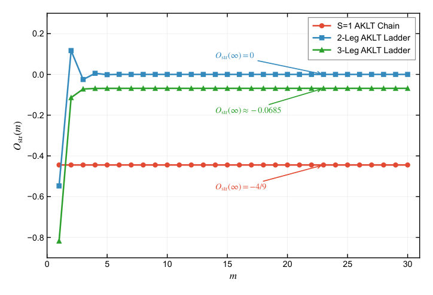
<figcaption class="paper-figure-caption"><b>Fig 1.</b> FIG. 1: Thermodynamic-limit string order Ostr(m) versus m for the chain, two-leg ladder,</figcaption>
</figure>
<figure class="paper-figure-card">
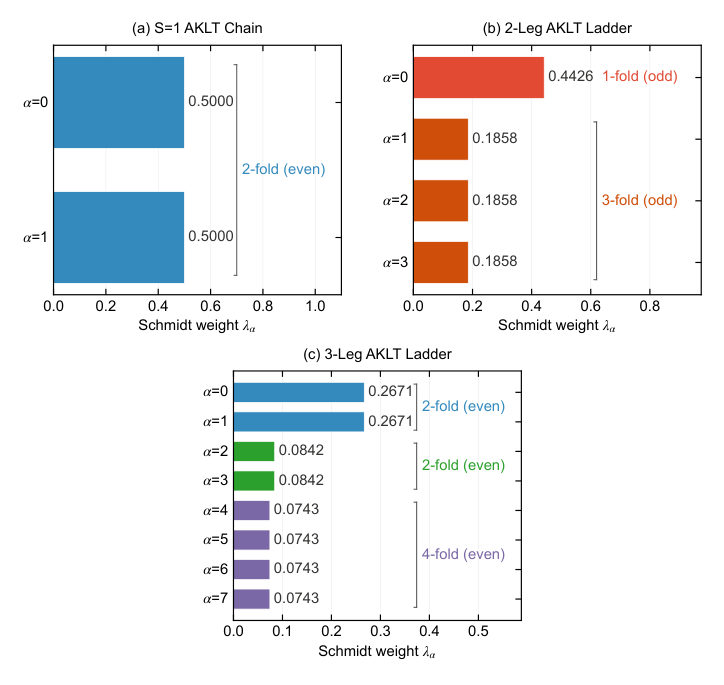
<figcaption class="paper-figure-caption"><b>Fig 2.</b> FIG. 2: Entanglement spectra of the chain, the two-leg ladder, and the three-leg ladder.</figcaption>
</figure>
<figure class="paper-figure-card">
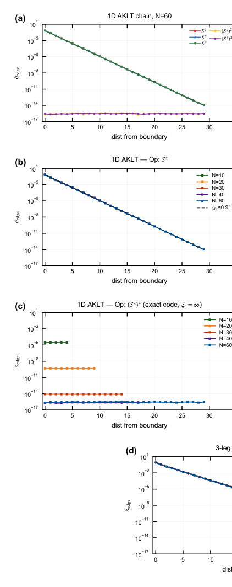
<figcaption class="paper-figure-caption"><b>Fig 3.</b> FIG. 3: (a) Edge-distinguishability δedge versus distance from the boundary for all</figcaption>
</figure>
</div>

<p><strong>Summary.</strong> The authors investigate how symmetry protects quantum information encoded on the boundaries of a three-leg AKLT ladder. They derive a quantitative decay law showing that local probe operators can only access specific symmetry sectors, leading to an observable hierarchy in correlation lengths. This establishes a rigorous link between lattice geometry, underlying symmetries, and the robustness of topological quantum memory.</p>
<p><strong>Why it may be interesting.</strong> This work provides quantitative metrics (decay laws, selection rules) linking fundamental symmetries to concrete measures of quantum information protection in lattice models, which is highly relevant for understanding robust quantum memories and computation architectures.</p>
<details>
<summary>Detailed structure</summary>
<p><strong>Main problem.</strong> The study aims to establish a quantitative connection between Symmetry-Protected Topological (SPT) symmetry, lattice geometry, and the protection of boundary-encoded quantum information.</p>
<p><strong>Main result.</strong> The paper shows that local operator accessibility decay is governed by selection rules derived from symmetries, leading to an observable hierarchy of correlation lengths in the three-leg AKLT ladder.</p>
<p><strong>Method.</strong> The analysis uses exact Matrix Product State (MPS) constructions and channel decomposition techniques motivated by the Knill--Laflamme condition to quantify information leakage.</p>
<p><strong>Model / system.</strong> The system studied is the three-leg Affleck-Kennedy-Lieb-Tasaki (AKLT) ladder, an exactly solvable SPT model with on-site symmetry SO(3) x Z2. It is analyzed using MPS representations derived from a frustration-free parent Hamiltonian.</p>
<p><strong>Key observables.</strong> Logical gates ($   ext{SO}(3)$ rotations and permutation), local operator accessibility decay law $\delta_{	ext{edge}}(	ext{dist}) \propto e^{-	ext{dist}/\xi(L=\ell)}$, and the hierarchy of correlation lengths $\xi(L=1) > \xi(L=2) > \xi(L=3)$.</p>
<p><strong>Important parameters / regimes.</strong> The symmetry labels (SO(3) tensor rank and $P_{tb}$ parity), the lattice geometry (three-leg ladder vs. single chain), and the correlation lengths $\xi(L)$ are key parameters.</p>
<p><strong>Assumptions / limitations.</strong> The analysis relies on projecting the system onto relevant sectors ($L$-sectors) and assuming that the decay law can be accurately modeled by retaining leading eigenvalues in the channel decomposition.</p>
<p><strong>Figures summary.</strong> Table IV shows the channel-resolved edge fidelity $\delta_{	ext{edge}}$ at a finite size, demonstrating how contributions from different symmetry channels (b) and (c) add in quadrature to determine the overall decay profile.</p>
<p><strong>Paper structure.</strong> The paper first characterizes the symmetries and logical gates using MPS. It then introduces a distinguishability measure based on channel decomposition of the transfer matrix. Finally, it derives the symmetry-resolved decay law for local accessibility, showing how different $L$-sectors contribute distinct correlation lengths.</p>
</details>
<details>
<summary>Abstract</summary>
<p>Symmetry-protected topological (SPT) phases provide a platform for encoding quantum information in protected boundary degrees of freedom. Here we study the three-leg Affleck-Kennedy-Lieb-Tasaki (AKLT) ladder as an exactly solvable SPT system with on-site symmetry $SO(3)\times \mathbb{Z}_2$. Using an exact matrix product state construction, we characterize the symmetry action on the edge encoding space and the accessibility of this space by local operators. We find that the continuous $SO(3)$ symmetry induces boundary rotations, while the leg-exchange symmetry generates a geometry-dependent logical permutation of edge qubits. Furthermore, by introducing a distinguishability measure motivated by the Knill--Laflamme condition, we derive a symmetry-resolved decay law for local accessibility. The decay is controlled by a selection rule raised from the Wigner--Eckart theorem, whereby a rank-$\ell$ local operator couples only to the $\mathcal L=\ell$ transfer-matrix sector, with a decay length determined by the corresponding correlation length. We further identify a finite-size channel that is independent of the probe operator position. These results establish a quantitative connection between SPT symmetry, lattice geometry, and the protection of boundary-encoded quantum information.</p>
</details>
<p><sub><a href="#top">↑ back to top</a></sub></p>

<p><a id="paper-2608.03865"></a></p>
<h3 id="interplay-between-teleportation-fidelity-and-basis-independent-coherence-in-maximally-sliced-states-under-decoherence"><a href="http://arxiv.org/abs/2608.03865v1">Interplay between teleportation fidelity and basis-independent coherence in maximally sliced states under decoherence</a></h3>
<p><strong>Authors:</strong> Anushree Pandey, Sovik Roy<br>
<strong>Type:</strong> theory · <strong>Category:</strong> quantum information and computing · <strong>PDF:</strong> <a href="https://arxiv.org/pdf/2608.03865v1">https://arxiv.org/pdf/2608.03865v1</a><br>
<strong>Analysis basis:</strong> full PDF text, analyzed in chunks
<strong>Topic relevance:</strong> 🔥 <code>entanglement &amp; information structure</code> <strong>4/5</strong> · <code>correlated / nonlocal dissipation</code> <strong>3/5</strong> · <code>methods for driven-dissipative</code> <strong>3/5</strong> · <code>driven-dissipative phase transition</code> <strong>2/5</strong> · <code>Keldysh / 2PI / non-Gaussian methods</code> <strong>1/5</strong> · <code>non-equilibrium dynamics</code> <strong>1/5</strong> · <code>non-equilibrium universality</code> <strong>1/5</strong></p>
<div class="figure-strip-hint">↔ Scroll figures horizontally</div>
<div class="paper-figures-scroll">
<figure class="paper-figure-card">
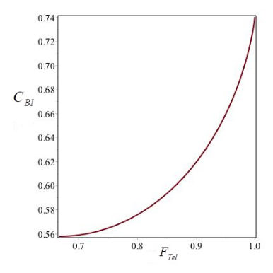
<figcaption class="paper-figure-caption"><b>Fig 1.</b> Figure 1: Variation of the basis-independent coherence CBI with the teleportation fidelity FTel for the ideal maximally sliced (MS) state. The plot, obtained from Eq. (17), shows a smooth monotonic increase of the basis-independent coherence with teleportation fidelity, ranging from CBI ≈0.558 at the classical teleportation threshold (FTel = 2</figcaption>
</figure>
<figure class="paper-figure-card">
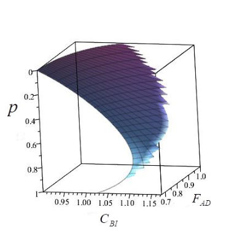
<figcaption class="paper-figure-caption"><b>Fig 2.</b> Figure 2: Three-dimensional variation of the basis-independent coherence CBI as a function of the teleportation fidelity FAD and the amplitude damping parameter p. The surface illustrates the analytical relationship given by Eq. (30), showing that CBI is positively correlated with the teleportation fidelity while both quantities are progressively degraded with increasing amplitude damping. The contraction of the surface at larger values of p indicates that stronger decoherence restricts the physically accessible region of high coherence and high teleportation fidelity.</figcaption>
</figure>
<figure class="paper-figure-card">
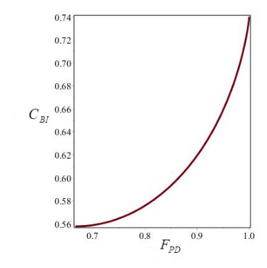
<figcaption class="paper-figure-caption"><b>Fig 3.</b> Figure 3: Variation of the basis-independent coherence, CBI, as a function of the teleportation fidelity, FP D, under phase damping.</figcaption>
</figure>
</div>

<p><strong>Summary.</strong> This paper theoretically analyzes how environmental noise degrades the performance of quantum teleportation using a three-qubit Maximally Sliced state. By deriving analytical links between fidelity, basis-independent coherence, and entanglement measures under amplitude and phase damping, it distinguishes the unique degradation pathways caused by different types of decoherence.</p>
<p><strong>Why it may be interesting.</strong> This work is highly relevant as it provides a unified, quantitative framework connecting fundamental concepts—multipartite entanglement ($   au$), coherence ($   ext{CBI}$), and operational capability (teleportation)—under realistic noisy conditions, which is crucial for designing robust quantum communication protocols.</p>
<details>
<summary>Detailed structure</summary>
<p><strong>Main problem.</strong> The study investigates how environmental decoherence affects quantum teleportation fidelity by analyzing its interplay with basis-independent coherence in maximally sliced states.</p>
<p><strong>Main result.</strong> The analysis establishes explicit analytical relationships between coherence and fidelity under amplitude damping (AD) and phase damping (PD), showing distinct noise effects: AD introduces a state-dependent threshold, while PD preserves the quantum advantage until complete dephasing.</p>
<p><strong>Method.</strong> The authors employ the Kraus operator formalism to derive expressions for teleportation fidelity and basis-independent coherence, connecting these quantities to the Coffman-Kundu-Wootters (CKW) three-tangle.</p>
<p><strong>Model / system.</strong> The system under study is a three-qubit Maximally Sliced (MS) state, which serves as the shared entangled resource for quantum teleportation. Decoherence is modeled using Amplitude Damping and Phase Damping channels.</p>
<p><strong>Key observables.</strong> Teleportation fidelity ($F_{	ext{Tel}}$), basis-independent coherence ($   ext{CBI}$), and the CKW three-tangle ($ au$).</p>
<p><strong>Important parameters / regimes.</strong> The state parameter $   heta$, amplitude damping probability $p$, and phase damping rate $\lambda$.</p>
<p><strong>Assumptions / limitations.</strong> The analysis assumes independent application of Kraus operators for each qubit during decoherence, and that the teleportation protocol relies on the reduced bipartite density matrix.</p>
<p><strong>Figures summary.</strong> Figure 1 shows the monotonic increase of CBI with $F_{	ext{Tel}}$ for ideal states. Figure 2 illustrates the three-dimensional variation of CBI as a function of $F_{	ext{AD}}$ and $p$, showing positive correlation and degradation with increasing noise.</p>
<p><strong>Paper structure.</strong> The paper develops by first defining the MS state and quantifying its entanglement via the three-tangle. It then derives fidelity expressions under AD and PD using Kraus operators, establishing analytical links between CBI and fidelity for both noise channels, concluding with a comparison of how each channel degrades quantum resources.</p>
</details>
<details>
<summary>Abstract</summary>
<p>The influence of environmental decoherence on quantum teleportation is investigated by considering the three-qubit Maximally Sliced (MS) state as the shared entangled resource. Using the Kraus operator formalism, analytical expressions are derived for the teleportation fidelity under amplitude damping and phase damping channels. The corresponding basis-independent coherence is obtained, establishing explicit analytical relations between coherence and teleportation fidelity under both decoherence mechanisms. The results are further expressed in terms of the Coffman-Kundu-Wootters (CKW) three-tangle, thereby connecting genuine tripartite entanglement with teleportation performance. The analysis reveals distinct effects of the two noise channels: amplitude damping introduces a state-dependent threshold for achieving quantum teleportation, whereas phase damping preserves the quantum advantage until complete dephasing. These results provide a unified analytical framework for understanding the interplay among multipartite entanglement, quantum coherence and teleportation in noisy three-qubit MS states.</p>
</details>
<p><sub><a href="#top">↑ back to top</a></sub></p>

<p><a id="paper-2608.03398"></a></p>
<h3 id="the-intermediate-scattering-function-of-an-interacting-adlayer-as-a-characteristic-function-a-closed-form-theory-of-ising-lattice-gas-surface-diffusion"><a href="http://arxiv.org/abs/2608.03398v1">The intermediate scattering function of an interacting adlayer as a characteristic function: a closed-form theory of Ising lattice-gas surface diffusion</a></h3>
<p><strong>Authors:</strong> S. Miret-Artés<br>
<strong>Type:</strong> theory · <strong>Category:</strong> statistical mechanics · <strong>PDF:</strong> <a href="https://arxiv.org/pdf/2608.03398v1">https://arxiv.org/pdf/2608.03398v1</a><br>
<strong>Analysis basis:</strong> full PDF text, analyzed in chunks
<strong>Topic relevance:</strong> 🔥 <code>non-equilibrium dynamics</code> <strong>4/5</strong> · <code>methods for driven-dissipative</code> <strong>3/5</strong> · <code>non-equilibrium universality</code> <strong>3/5</strong> · <code>driven-dissipative phase transition</code> <strong>2/5</strong> · <code>Frenkel-Kontorova</code> <strong>1/5</strong> · <code>Keldysh / 2PI / non-Gaussian methods</code> <strong>1/5</strong> · <code>correlated / nonlocal dissipation</code> <strong>1/5</strong></p>
<div class="figure-strip-hint">↔ Scroll figures horizontally</div>
<div class="paper-figures-scroll">
<figure class="paper-figure-card">
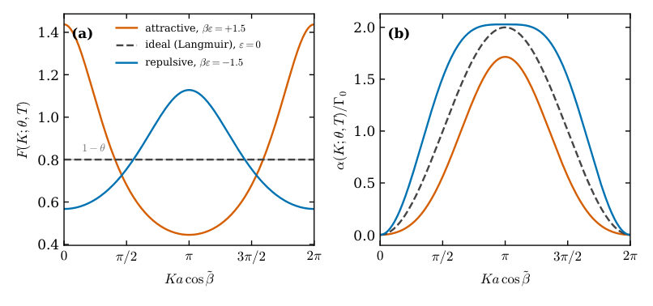
<figcaption class="paper-figure-caption"><b>Fig 1.</b> Figure 1: Analytic ingredients of the interacting ISF, Eq. (42), for a one-dimensional channel (z = 2) at coverage θ = 0.2: attractive (βε = +1.5, η = +0.28), ideal (ε = 0, dashed) and repulsive (βε = −1.5, η = −0.17) adlayers. (a) Static structure factor F(K), Eq. (20): attraction gathers diffuse intensity at the zone centre, repulsion at the zone boundary, while the ideal adlayer is flat at 1 −θ. (b) Dephasing rate α(K)/Γ0, Eq. (41): the interaction distorts the Chudley–Elliott shape 1−cos(Ka cos ˜β) (dashed) oppositely for opposite interaction signs, and de Gennes narrowing flattens the rate around the structure peak of the repulsive case.</figcaption>
</figure>
<figure class="paper-figure-card">
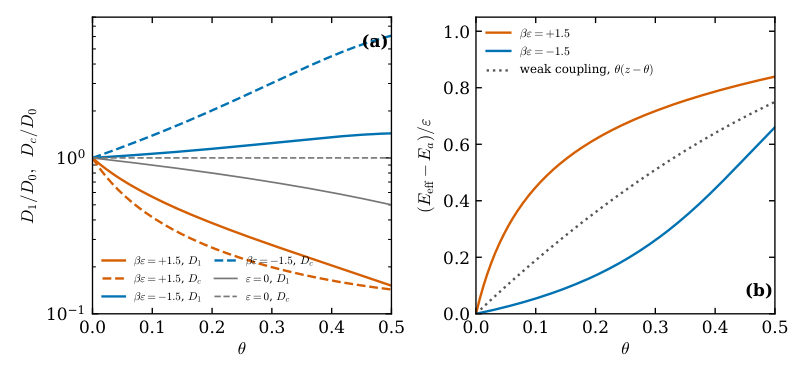
<figcaption class="paper-figure-caption"><b>Fig 2.</b> Figure 2: The two faces of interacting transport along a channel (z = 2), for the same attractive (βε = +1.5, orange) and repulsive (βε = −1.5, blue) adlayers in both panels, set throughout by η(θ, βε). (a) The coefficients: jump D1 (solid) and chemical Dc (dashed), Eqs. (47) and (52), normalized to D0, with ε = 0 in grey. Attraction suppresses both; repulsion enhances them, most strongly the chemical one, which rises about six-fold by θ = 0.5, while for ε = 0 it stays exactly at D0 [24]. (b) Their Arrhenius slope: the excess (Eeff −Ea)/ε, Eq. (54), with the weak-coupling form θ(z −θ) (dotted). The two panels are the magnitude and the temperature slope of the same interacting diffusion:...</figcaption>
</figure>
<figure class="paper-figure-card">
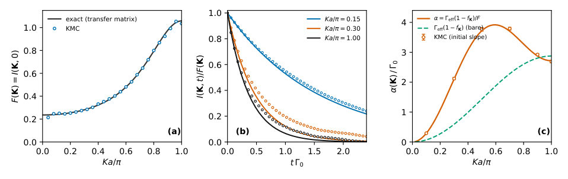
<figcaption class="paper-figure-caption"><b>Fig 3.</b> Figure 3: Kinetic Monte Carlo benchmark along a one-dimensional channel (θ = 0.5, repulsive βε = −1.5), run on the same Hamiltonian (8) and the same Kawasaki rates that the theory uses (Appendix C). Here the transfer-matrix statics and Γeff are exact, so the test isolates the Markovian truncation. (a) Statics: F(K) = I(K, 0) from simulation (points) against the exact Lorentzian (20) (line). (b) Shape: normalized ISF at three momenta against e−αt (lines); near-exponential, with the largest departure at mid-zone. (c) Rate: the collective rate measured as a genuine t →0+ slope (sixteen seeds, error bars the standard error), against the closed form (41) (solid) and the undressed Γeff[1 −fK]...</figcaption>
</figure>
<figure class="paper-figure-card">
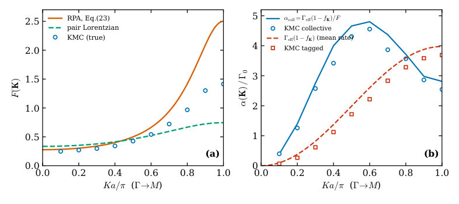
<figcaption class="paper-figure-caption"><b>Fig 4.</b> Figure 4: The same benchmark on a square lattice (z = 4, θ = 0.5, βε = −0.8, along Γ→M), testing what the channel cannot: here neither the statics nor Γeff is exact. (a) Statics: the measured F (points) lies between the random-phase form (32) (solid), which overestimates the correlation peak, and the pair-approximation Lorentzian (20) (dashed). (b) Dynamics: the collective rate built from the measured F (points) follows the closed form (solid) to 10–15%, while the tagged-particle rate (open squares) falls below the mean-rate form (dashed) by the tracer correlation factor fc ≈0.7–0.9 that the theory omits.</figcaption>
</figure>
<figure class="paper-figure-card">
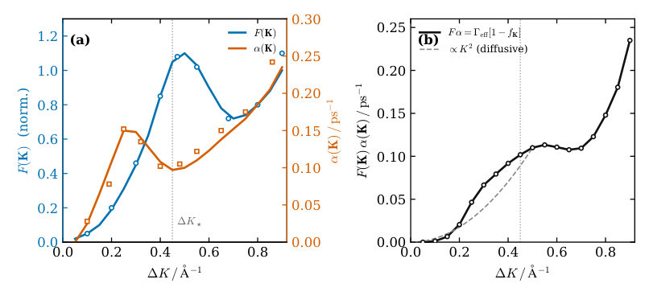
<figcaption class="paper-figure-caption"><b>Fig 5.</b> Figure 5: Coherent HeSE data for Na/Cu(111) at θ = 0.025 ([11¯2] azimuth, 155 K), digitized from Ref. [14] (Figs. 3b and 4a). (a) The structural pair: the measured quasi-elastic amplitude, our F(K) (left axis), is suppressed as K →0 and peaks at ∆K⋆≈0.45 Å−1, while the decay rate α(K) (right axis) shows its anticorrelated dip at the same momentum: de Gennes narrowing, Eq. (41). (b) The parameter-free test: their point-by-point product Fα = Γeff[1 −fK] retains no trace of either peak or dip and reduces to the smooth, diffusive single-adsorbate rate; equivalently, their ratio is 1/F(K), the narrowing itself.</figcaption>
</figure>
</div>

<p><strong>Summary.</strong> This paper presents a closed-form theory for the intermediate scattering function of an interacting adlayer, treating it as an Ising lattice-gas system. By leveraging the ISF's role as a characteristic function, the authors successfully incorporate lateral interactions into surface diffusion dynamics. The resulting theory provides testable predictions that are validated against Kinetic Monte Carlo simulations.</p>
<p><strong>Why it may be interesting.</strong> The rigorous derivation of dynamics from static structure factors using a characteristic function approach is highly relevant for understanding non-equilibrium many-body systems where memory effects are crucial.</p>
<details>
<summary>Detailed structure</summary>
<p><strong>Main problem.</strong> To develop a closed-form theoretical description for the intermediate scattering function (ISF) of an interacting adlayer undergoing surface diffusion.</p>
<p><strong>Main result.</strong> The authors derived a closed-form expression for the ISF that rigorously incorporates lateral interactions, predicting four correlated fingerprints observable in experimental measurements.</p>
<p><strong>Method.</strong> The theory utilizes the characteristic function framework, projecting the master equation onto the density and employing techniques like Random-Phase Approximation (RPA) and Transfer Matrix methods to derive exact or controlled approximations.</p>
<p><strong>Model / system.</strong> The system is an interacting adlayer modeled as an Ising lattice-gas on a substrate. Dynamics are governed by surface diffusion processes, analyzed via measurements like helium spin-echo yielding the ISF.</p>
<p><strong>Key observables.</strong> Intermediate Scattering Function (ISF), $I(K, t)$; Static Structure Factor, $F(K)$; Quasi-elastic line shape; Linewidth and Arrhenius slope dependence on coverage.</p>
<p><strong>Important parameters / regimes.</strong> Interaction strength ($\varepsilon$), temperature ($T$), adsorbate coverage ($    heta$), momentum transfer ($K$).</p>
<p><strong>Assumptions / limitations.</strong> The closed form is obtained by dropping the memory kernel of the equation of motion, which provides a controlled approximation; the RPA is used for 2D treatment.</p>
<p><strong>Figures summary.</strong> Figures illustrate the deviation parameter $\Delta(K)$ across the zone for different interaction regimes and test theoretical bounds against KMC data to validate the closed-form applicability.</p>
<p><strong>Paper structure.</strong> The paper establishes the ISF as a characteristic function, develops the theory using lattice gas models (1D via Transfer Matrix, 2D via RPA), derives the closed form by controlling approximations, and validates these results through comparison with KMC simulations and specific physical applications (Na/Cu(111)).</p>
</details>
<details>
<summary>Abstract</summary>
<p>The intermediate scattering function (ISF) measured by helium spin-echo is a characteristic function (CF): the Fourier transform of the distribution of adsorbate displacements, whose value at zero time is the static structure factor. We use this double role to bring lateral interactions of Ising lattice-gas type into surface diffusion. The ISF then follows in closed form in momentum transfer, time, coverage and temperature, and with it the whole linear-response hierarchy. A single correlation parameter fixes both the equilibrium structure and the interaction-renormalized hop rate; it is exact along a one-dimensional channel, and is carried onto the surface as the nearest-neighbour correlation of a pair approximation, the momentum dependence of the structure factor then coming from a collective (random-phase) treatment. The closed form is not postulated. Projecting the master equation onto the density gives an exact equation of motion whose amplitude is an identity and whose initial rate obeys a sum rule, so that the quasi-elastic weight is the layer's own structure factor and de Gennes narrowing becomes a theorem rather than an analogy; the closed form is what remains when the memory kernel of that equation is dropped. Kinetic Monte Carlo (KMC) on the same Hamiltonian reproduces the dressed hop rate to better than about one per cent and the initial collective rate to $1$--$2\%$. Four correlated, non-critical fingerprints of the interaction follow --- in the quasi-elastic amplitude, its linewidth, the Arrhenius slope, and the dependence of the fitted linewidth on the range of times over which the decay is fitted. They invert in closed form for the attempt frequency, the static barrier and the interaction. Applications to Na/Cu(111) and H/Pt(111) are analysed and discussed.</p>
</details>
<p><sub><a href="#top">↑ back to top</a></sub></p>

<p><a id="paper-2608.02756"></a></p>
<h3 id="dynamic-induction-of-lattice-gauge-theories-on-a-quantum-computer"><a href="http://arxiv.org/abs/2608.02756v1">Dynamic Induction of Lattice Gauge Theories on a Quantum Computer</a></h3>
<p><strong>Authors:</strong> Barbara Andrade, Declan Millar, Lewis Anderson, Vincent R. Pascuzzi, Maciej Lewenstein, Ivano Tavernelli, Jad C. Halimeh, Tobias Grass<br>
<strong>Type:</strong> both · <strong>Category:</strong> quantum information and computing · <strong>PDF:</strong> <a href="https://arxiv.org/pdf/2608.02756v1">https://arxiv.org/pdf/2608.02756v1</a><br>
<strong>Analysis basis:</strong> full PDF text, analyzed in chunks
<strong>Topic relevance:</strong> 🔥 <code>analog quantum simulation</code> <strong>4/5</strong> · <code>methods for driven-dissipative</code> <strong>3/5</strong> · <code>QC/QI experiment</code> <strong>2/5</strong> · <code>non-equilibrium dynamics</code> <strong>2/5</strong> · <code>driven-dissipative phase transition</code> <strong>1/5</strong> · <code>entanglement &amp; information structure</code> <strong>1/5</strong> · <code>exotic spin models in light-matter</code> <strong>1/5</strong></p>
<div class="figure-strip-hint">↔ Scroll figures horizontally</div>
<div class="paper-figures-scroll">
<figure class="paper-figure-card">
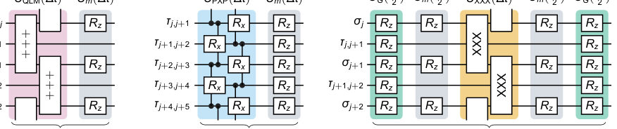
<figcaption class="paper-figure-caption"><b>Fig 1.</b> FIG. 1. Qubit encoding, gauge protection, and circuit realizations of the dynamically induced spin-1/2 U(1) quantum link Schwinger model. (a) The gauge–matter interaction is a three-body term that creates a particle–antiparticle pair on neighboring matter sites and simultaneously flips the electric flux on the link between them, coupling |+++⟩and |−−−⟩ with strength J in the rotated frame. (b) Gauss’s law Gj |phys⟩= 0 ties the matter charge at each site to the divergence of the electric field, leaving three gauge-invariant qubit triples per site parity. (c) The two initial states studied experimentally: the fully filled state and the bare vacuum. (d) In the spectrum of HXXX, the...</figcaption>
</figure>
<figure class="paper-figure-card">
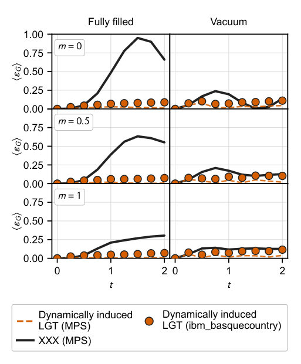
<figcaption class="paper-figure-caption"><b>Fig 2.</b> FIG. 2. Gauge violation for a dynamically induced spin-1/2 U(1) quantum link Schwinger model. Time evolution of the normalized average gauge violation ⟨εG⟩fol- lowing a quench from the fully-filled state (left) and vac- uum state (right). Rows show staggered masses, m = 0 (blue); m = 0.5 (green); m = 1 (orange). Solid lines show the evolution under HXXX from Trotterized matrix-product- state (MPS) simulation; dashed lines give the MPS results for the dynamically induced gauge protection quantum cir- cuits. Markers show ibm_basquecountry hardware data for the dynamically induced LGT (circles). We set the protection strength to V = 4.5 and use Trotter step size ∆t = 0.25.</figcaption>
</figure>
<figure class="paper-figure-card">
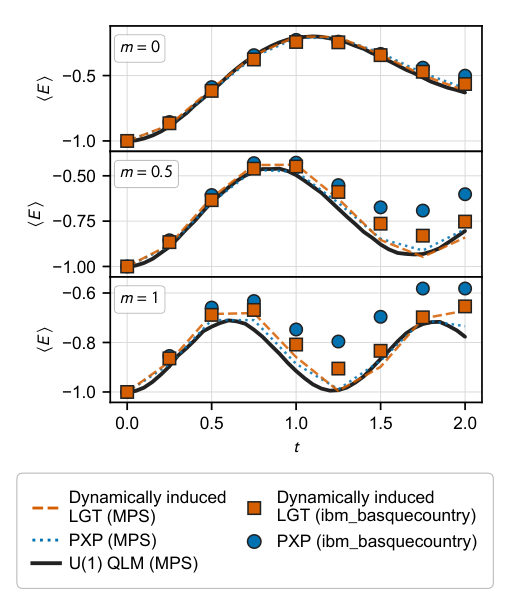
<figcaption class="paper-figure-caption"><b>Fig 3.</b> FIG. 3. Mean electric field for a dynamically induced spin-1/2 U(1) quantum link Schwinger model evolving from the fully-filled state. Time evolution of the mean electric field ⟨E⟩following a quench from the fully-occupied product state, where every matter site is occupied and gauge links are fixed by Gauss’s law. Panels show staggered masses m = 0 (blue); m = 0.5 (green); m = 1 (orange). Solid lines are the high-resolution target QLM trajectory from Trotter- ized matrix-product-state (MPS) simulation; dashed and dot- ted lines give the MPS results for the dynamically induced gauge protection and PXP circuits, respectively. Markers show ibm_basquecountry hardware data for the PXP model...</figcaption>
</figure>
<figure class="paper-figure-card">
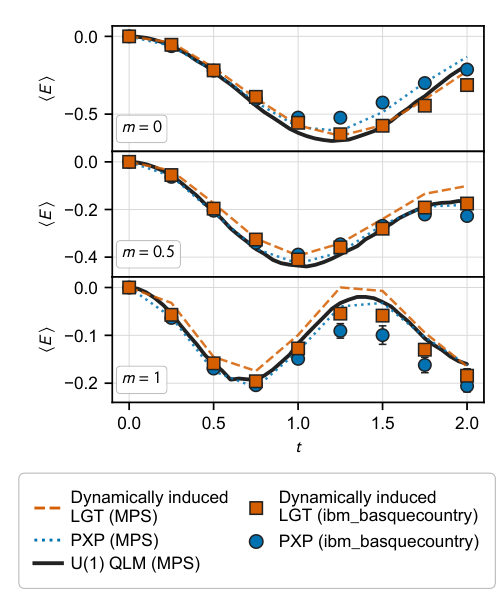
<figcaption class="paper-figure-caption"><b>Fig 4.</b> FIG. 4. Mean electric field for a dynamically induced spin-1/2 U(1) quantum link Schwinger model evolv- ing from the vacuum. Time evolution of the mean electric field ⟨E⟩following a quench from the bare vacuum, where ev- ery matter site is empty and gauge links are fixed by Gauss’s law. Panels show staggered masses m = 0 (blue); m = 0.5 (green); m = 1 (orange). Solid lines are the high-resolution target QLM trajectory from Trotterized matrix-product-state (MPS) simulation; dashed and dotted lines give the MPS results for the dynamically induced gauge protection and PXP circuits, respectively. Markers show ibm_basquecountry hardware data for the PXP model (circles) and the dynami- cally...</figcaption>
</figure>
</div>

<p><strong>Summary.</strong> The paper introduces a breakthrough method to simulate Lattice Gauge Theories on quantum computers by dynamically generating the required gauge dynamics from a simpler starting Hamiltonian. By using single-qubit terms derived from Gauss's law, they successfully confine the evolution to the physical subspace while drastically reducing the circuit depth compared to direct simulation methods.</p>
<p><strong>Why it may be interesting.</strong> This work directly addresses resource limitations in simulating complex physical theories like LGTs by transforming a symmetry constraint into an active, efficient part of the Hamiltonian engineering process, which is highly relevant for quantum simulation algorithms.</p>
<details>
<summary>Detailed structure</summary>
<p><strong>Main problem.</strong> Developing a resource-efficient method for digital quantum simulation of Lattice Gauge Theories (LGTs) while rigorously enforcing gauge invariance.</p>
<p><strong>Main result.</strong> The authors demonstrated that using single-qubit terms proportional to the Gauss's law generator can dynamically induce the LGT dynamics from a simpler Hamiltonian, achieving a fivefold reduction in entangling-gate depth compared to direct implementations.</p>
<p><strong>Method.</strong> They employ a novel 'dynamic induction' paradigm where gauge constraints are enforced via experimentally efficient single-qubit penalty terms ($V_{HG}$) added to a simple starting Hamiltonian ($H_{XXX}$), rather than relying on post-selection or energy penalties.</p>
<p><strong>Model / system.</strong> The target system is the U(1) Quantum Link Model (QLM) LGT, simulated using spin-1/2 qubits. The implementation uses 101 qubits on an IBM quantum processor to simulate dynamics in $1+1$ dimensions.</p>
<p><strong>Key observables.</strong> Average gauge violation ($\langle \epsilon_G 
angle$), mean electric field ($\langle E 
angle$), and comparison of time evolution against Matrix Product State (MPS) classical benchmarks.</p>
<p><strong>Important parameters / regimes.</strong> Gauge protection strength ($V=4.5$); Trotter step size ($\Delta t=0.25$); Lattice size ($N_f=50$).</p>
<p><strong>Assumptions / limitations.</strong> The method is shown to work for $1+1$ dimensions, and the initial Hamiltonian used is simpler than the full target LGT.</p>
<p><strong>Figures summary.</strong> Figures illustrate qubit encoding, gauge protection mechanisms separating physical/unphysical sectors, and time evolution plots comparing protected vs. unprotected dynamics of observables like $\langle \epsilon_G 
angle$ and $\langle E 
angle$.</p>
<p><strong>Paper structure.</strong> The paper introduces the problem (LGT simulation), proposes the dynamic induction method using $H_{XXX}$ plus gauge terms ($V_{HG}$), details the implementation on quantum hardware, presents results showing reduced circuit depth and accurate dynamics matching classical benchmarks.</p>
</details>
<details>
<summary>Abstract</summary>
<p>Gauge invariance is central to modern physics and underpins quantum simulations of lattice gauge theories (LGTs). Existing quantum simulation approaches employ Gauss's law either to energetically suppress gauge-violating processes in analog platforms or to detect and discard gauge-violating outcomes in digital devices. Here we introduce a third paradigm, in which Gauss's law is used to dynamically generate the gauge theory itself from a substantially simpler Hamiltonian. Starting from a readily programmable three-body XXX model, we employ experimentally efficient single-qubit U(1) gauge symmetry-generator terms that induce the dynamics of a U(1) LGT. We implement this approach using 101 qubits on a 156-qubit IBM quantum processor and observe real-time dynamics in quantitative agreement with the target LGT while reducing the entangling-gate depth per Trotter step by a factor of five compared with a direct implementation. Our results establish gauge protection as a resource for Hamiltonian engineering rather than merely symmetry preservation, opening a scalable resource-efficient route towards digital quantum simulations of increasingly complex gauge theories in higher spatial dimensions.</p>
</details>
<p><sub><a href="#top">↑ back to top</a></sub></p>

<p><a id="paper-2608.02815"></a></p>
<h3 id="paqit-energy-runtime-fidelity-co-optimization-for-neutral-atom-quantum-computers"><a href="http://arxiv.org/abs/2608.02815v1">PaQit: Energy-Runtime-Fidelity Co-Optimization for Neutral Atom Quantum Computers</a></h3>
<p><strong>Authors:</strong> Jason Ludmir, Tirthak Patel<br>
<strong>Type:</strong> both · <strong>Category:</strong> other · <strong>PDF:</strong> <a href="https://arxiv.org/pdf/2608.02815v1">https://arxiv.org/pdf/2608.02815v1</a><br>
<strong>Analysis basis:</strong> full PDF text, analyzed in chunks
<strong>Topic relevance:</strong> 🔥 <code>Rydberg arrays</code> <strong>4/5</strong> · 🔥 <code>analog quantum simulation</code> <strong>4/5</strong> · <code>QC/QI experiment</code> <strong>3/5</strong> · <code>entanglement &amp; information structure</code> <strong>1/5</strong> · <code>methods for driven-dissipative</code> <strong>1/5</strong> · <code>non-equilibrium dynamics</code> <strong>1/5</strong></p>
<div class="figure-strip-hint">↔ Scroll figures horizontally</div>
<div class="paper-figures-scroll">
<figure class="paper-figure-card">
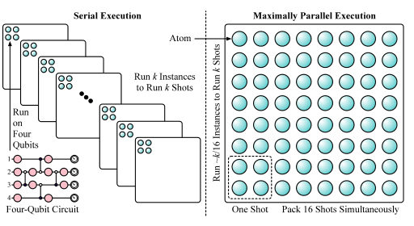
<figcaption class="paper-figure-caption"><b>Fig 1.</b> Fig. 1. Serial execution vs. maximally parallel execution.</figcaption>
</figure>
<figure class="paper-figure-card">
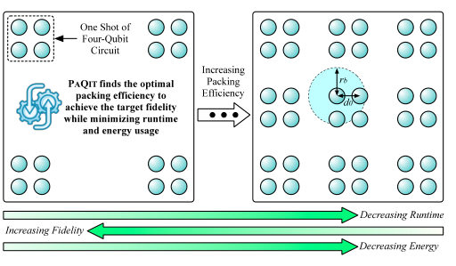
<figcaption class="paper-figure-caption"><b>Fig 2.</b> Fig. 2. PaQit determines the packing efficiency of the qubits on the neutral atom system to minimize the runtime and energy usage for a target output fidelity desired by the user.</figcaption>
</figure>
<figure class="paper-figure-card">
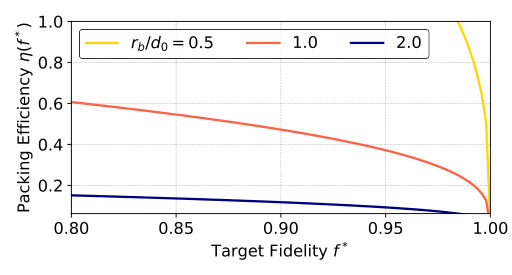
<figcaption class="paper-figure-caption"><b>Fig 3.</b> Fig. 3. The packing efficiency decreases with increasing fidelity, with strong dependency on the rb</figcaption>
</figure>
<figure class="paper-figure-card">
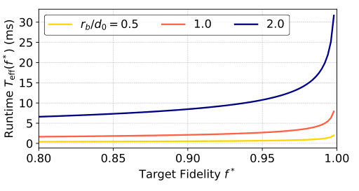
<figcaption class="paper-figure-caption"><b>Fig 4.</b> Fig. 4. The total runtime of a circuit increases with higher target fidelity, with strong dependency on the rb</figcaption>
</figure>
<figure class="paper-figure-card">
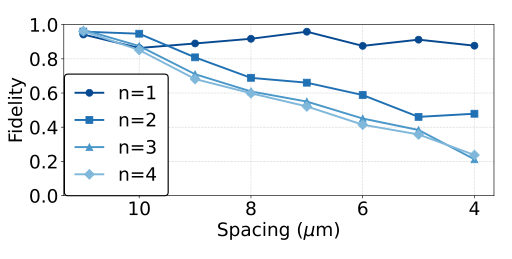
<figcaption class="paper-figure-caption"><b>Fig 5.</b> Fig. 7. Real Aquila hardware executions showing state-preparation fidelity versus atom spacing for four array sizes.</figcaption>
</figure>
</div>

<p><strong>Summary.</strong> The paper introduces PaQit, a novel framework designed to co-optimize energy, runtime, and fidelity in neutral-atom quantum computers. It models the critical trade-off where increasing qubit density boosts speed but degrades computation accuracy due to Rydberg interactions. By integrating device physics into scheduling decisions, PaQit provides actionable guidelines for operating these complex quantum hardware systems.</p>
<p><strong>Why it may be interesting.</strong> This work directly addresses the engineering constraints necessary for realizing large-scale quantum computation with neutral atoms by providing a quantitative link between physical interactions (Rydberg blockade) and system performance metrics (Energy/Time/Fidelity).</p>
<details>
<summary>Detailed structure</summary>
<p><strong>Main problem.</strong> The relationship between energy consumption, runtime, and computational fidelity in neutral-atom quantum computers is poorly understood, hindering practical scheduling decisions.</p>
<p><strong>Main result.</strong> PaQit provides a framework that jointly optimizes these three metrics by translating target fidelity into specific qubit packing decisions based on Rydberg interaction physics.</p>
<p><strong>Method.</strong> The authors developed a hardware-grounded analytical model and a fidelity-aware qubit packing framework to guide system scheduling.</p>
<p><strong>Model / system.</strong> The platform is neutral-atom quantum computing using atoms trapped in optical lattices, where interactions are dominated by the $1/r_{ij}^6$ Rydberg blockade potential. The dynamics are modeled via a time-dependent Hamiltonian incorporating this interaction term.</p>
<p><strong>Key observables.</strong> Energy consumption (P), Runtime (T), Computational Fidelity ($\mathcal{F}$), and Qubit Packing Density ($\eta$).</p>
<p><strong>Important parameters / regimes.</strong> Static baseline power ($P_0$), Rydberg blockade radius ($r_b$), target fidelity ($f^*$), and packing efficiency ($\eta$).</p>
<p><strong>Assumptions / limitations.</strong> The system operates in a static-power-dominated regime where energy depends heavily on execution time, not just instantaneous utilization.</p>
<p><strong>Figures summary.</strong> Figure 1 illustrates the bounds for serial versus maximally parallel execution. Figure 2 shows how PaQit determines optimal packing efficiency to minimize runtime and energy while meeting a target fidelity.</p>
<p><strong>Paper structure.</strong> The paper establishes the physical limitations (Rydberg interactions) leading to trade-offs between density/throughput and fidelity, develops analytical models for power/time scaling under serial and parallel regimes, introduces PaQit to resolve this multi-objective optimization, and validates the framework using simulations of real hardware platforms.</p>
</details>
<details>
<summary>Abstract</summary>
<p>Neutral-atom quantum computers provide a scalable platform for large-scale quantum computation due to their all-optical control, room-temperature operation, and flexible lattice geometry. Although the favorable energy characteristics of these systems are well recognized, the relationship between system-level energy consumption, runtime, and computational fidelity remains poorly understood, limiting practical scheduling decisions. In this work, we develop a hardware-grounded analytical model that captures how energy and runtime scale with qubit utilization in neutral-atom systems.   We introduce PaQit, a fidelity-aware qubit packing framework that integrates device-level Rydberg interaction physics with system-level scheduling to jointly optimize energy, runtime, and fidelity. By translating fidelity targets into packing decisions, PaQit identifies operating regimes that maximize parallelism while respecting interaction-driven crosstalk constraints. We validate the analytical framework using simulations of QuEra's analog Aquila system and digital Gemini system, as well as real hardware executions, demonstrating close agreement between the predicted trends and observed system behavior.</p>
</details>
<p><sub><a href="#top">↑ back to top</a></sub></p>

<p><a id="paper-2608.03950"></a></p>
<h3 id="joint-spectral-characterization-of-spdc-photon-pairs-near-2-math255mathm-in-algaas-on-insulator-waveguides"><a href="http://arxiv.org/abs/2608.03950v1">Joint spectral characterization of SPDC photon pairs near 2 $μ$m in (Al)GaAs-on-insulator waveguides</a></h3>
<p><strong>Authors:</strong> Alexandre Z. Leger, Emil Z. Ulsig, Samuel E. Fontaine, Dileep V. Reddy, Eric J. Stanton, Lynden K. Shalm, Richard P. Mirin, Martin J. Stevens, J. E. Sipe, Nicolas Volet, Deny R. Hamel<br>
<strong>Type:</strong> both · <strong>Category:</strong> quantum information and computing · <strong>PDF:</strong> <a href="https://arxiv.org/pdf/2608.03950v1">https://arxiv.org/pdf/2608.03950v1</a><br>
<strong>Analysis basis:</strong> full PDF text, analyzed in chunks
<strong>Topic relevance:</strong> 🔥 <code>quantum optics experiment</code> <strong>4/5</strong> · <code>interference shaping light</code> <strong>3/5</strong> · <code>Keldysh / 2PI / non-Gaussian methods</code> <strong>1/5</strong> · <code>QC/QI experiment</code> <strong>1/5</strong> · <code>driven-dissipative phase transition</code> <strong>1/5</strong></p>
<div class="figure-strip-hint">↔ Scroll figures horizontally</div>
<div class="paper-figures-scroll">
<figure class="paper-figure-card">
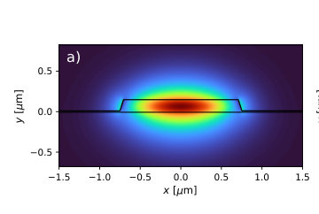
<figcaption class="paper-figure-caption"><b>Fig 1.</b> Fig. 2. Magnitude of the dominant electric-field component (a) for the fundamental TE00 signal/idler mode and (b) for the TM00 pump mode, calculated for the AlGaAs waveguide geometry using the numerical model described in Section 4. Similar mode profiles are obtained for GaAs.</figcaption>
</figure>
<figure class="paper-figure-card">
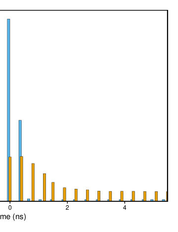
<figcaption class="paper-figure-caption"><b>Fig 2.</b> Fig. 3. Coincidence histograms of photon pairs from a GaAs waveguide pumped by a continuous-wave diode laser at 975 nm, measured with and without the 500 m dispersive fiber. Peak broadening arises from the fiber chromatic dispersion used for time-of-flight spectral analysis. Without the fiber, the histogram was accumulated for 90 s, yielding a coincidence-to-accidental ratio of 90. The measurement with the fiber required a 20-minute accumulation, which reduced this ratio to 4; the extended accumulation time and lower ratio account for the elevated background.</figcaption>
</figure>
<figure class="paper-figure-card">
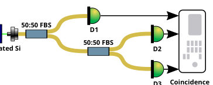
<figcaption class="paper-figure-caption"><b>Fig 3.</b> Fig. 4. Setup used to measure the heralded second-order correlation function. A half-wave plate and polarizing beam splitter (PBS) control the pump power prior to coupling into the waveguide. Residual pump light is suppressed using anti-reflection (AR) coated silicon before the down-converted signal is directed to a three-detector correlation measurement.</figcaption>
</figure>
<figure class="paper-figure-card">
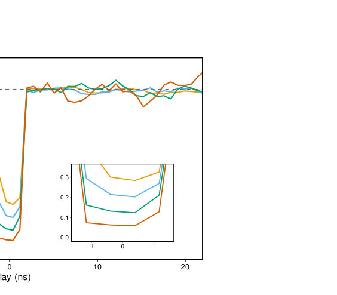
<figcaption class="paper-figure-caption"><b>Fig 4.</b> Fig. 5. Heralded second-order correlation function measured at different pump powers. At the lowest pump power (215 µW), we measure 𝑔(2) H (0) ≈0.06. The increase in 𝑔(2) H (0) with pump power is consistent with enhanced multi-pair generation at higher SPDC brightness.</figcaption>
</figure>
<figure class="paper-figure-card">

<figcaption class="paper-figure-caption"><b>Fig 5.</b> Fig. 7. Joint-spectral intensities obtained from the time-of-flight experiment described in Section 3.2 for (a) GaAs and (b) AlGaAs. Simulated joint-spectral intensities, JSI(𝜆𝑠, 𝜆𝑖) ∝|𝜑II(𝜆𝑠, 𝜆𝑖)|2, are shown for (c) GaAs and (d) AlGaAs.</figcaption>
</figure>
</div>

<p><strong>Summary.</strong> The paper reports the first direct joint spectral characterization of SPDC photon pairs near $2 \mu	ext{m}$ using integrated GaAs/AlGaAs waveguides. By combining time-of-flight spectroscopy with advanced numerical modeling, the authors validated their source's broadband emission and determined optimal device lengths for high-efficiency quantum light generation.</p>
<p><strong>Why it may be interesting.</strong> This work is highly relevant as it pushes integrated quantum light sources into a technologically important wavelength band ($2 \mu	ext{m}$) crucial for free-space quantum communication, providing necessary characterization data for quantum network components.</p>
<details>
<summary>Detailed structure</summary>
<p><strong>Main problem.</strong> The primary goal is the joint spectral characterization of spontaneously parametrically down-converted (SPDC) photon pairs near $2 \mu	ext{m}$ using integrated waveguides.</p>
<p><strong>Main result.</strong> The authors successfully demonstrated broadband emission with strong spectral anti-correlations and developed a numerical model that accurately reproduces the measured Joint Spectral Intensity (JSI).</p>
<p><strong>Method.</strong> The study combines experimental measurements of JSI via time-of-flight spectroscopy with theoretical modeling using the biphoton wavefunction approach.</p>
<p><strong>Model / system.</strong> The physical system is an integrated photon source utilizing straight GaAs- and AlGaAs-on-insulator waveguides, which provide strong second-order nonlinearity ($\chi^{(2)}$) for on-chip pair generation.</p>
<p><strong>Key observables.</strong> Joint Spectral Intensity (JSI), heralded second-order correlation function ($g^{(2)}_H(	au)$), and the SPDC conversion probability ($P_{	ext{SPDC}}$).</p>
<p><strong>Important parameters / regimes.</strong> The operating wavelength regime is near $2 \mu	ext{m}$, pumped from $980 	ext{ nm}$. Key parameters include effective areas ($\approx 0.75 \mu	ext{m}^2$) and optimal waveguide lengths (e.g., $\sim 13.8 	ext{ mm}$ for GaAs).</p>
<p><strong>Assumptions / limitations.</strong> The numerical model assumes both photons reach the output without scattering, and discrepancies in absolute efficiency are attributed to uncertainties in measuring on-chip pump power.</p>
<p><strong>Figures summary.</strong> Figures illustrate waveguide cross-sections, field profiles, coincidence histograms showing spectral broadening for time-of-flight analysis, and comparisons between simulated and measured JSI structures.</p>
<p><strong>Paper structure.</strong> The paper progresses from establishing the necessity of $2 \mu	ext{m}$ sources to detailing the experimental setup (JSI measurement), presenting quantitative results on pair generation rates ($P_{	ext{SPDC}}$), validating these results against a detailed numerical model, and finally determining optimal device lengths.</p>
</details>
<details>
<summary>Abstract</summary>
<p>Integrated photon-pair sources are a core component of chip-based quantum computing, communication, and metrology. Although such sources have been demonstrated at conventional telecom wavelengths, the 2 $μ$m band remains comparatively less explored, despite offering advantages for free-space quantum communication, low-loss transmission in emerging fiber networks, and integration with silicon photonic platforms. In this paper, we demonstrate spontaneous parametric down-conversion (SPDC) in straight GaAs- and AlGaAs-on-insulator waveguides. This platform offers strong second-order nonlinearity and geometry-tunable dispersion, which are advantageous for efficient on-chip pair generation. Measurements of the joint spectral intensity and heralded second-order correlation function show broadband emission around 2 $μ$m with strong spectral anti-correlations. To our knowledge, this is the first direct joint-spectral characterization of an integrated SPDC source in this wavelength regime.</p>
</details>
<p><sub><a href="#top">↑ back to top</a></sub></p>

<p><a id="paper-2608.03850"></a></p>
<h3 id="local-magnetic-order-in-vacancy-disrupted-spin-ice-ho2tio5"><a href="http://arxiv.org/abs/2608.03850v1">Local magnetic order in vacancy-disrupted spin ice Ho2TiO5</a></h3>
<p><strong>Authors:</strong> Raju Baral, Haidong Zhou, Qiang Zhang, Benjamin A. Frandsen, Stuart Calder<br>
<strong>Type:</strong> experiment · <strong>Category:</strong> strongly correlated electrons · <strong>PDF:</strong> <a href="https://arxiv.org/pdf/2608.03850v1">https://arxiv.org/pdf/2608.03850v1</a><br>
<strong>Analysis basis:</strong> full PDF text, analyzed in chunks
<strong>Topic relevance:</strong> 🔥 <code>analog quantum simulation</code> <strong>4/5</strong> · <code>exotic spin models in light-matter</code> <strong>3/5</strong> · <code>Kondo &amp; dissipative impurity</code> <strong>1/5</strong> · <code>entanglement &amp; information structure</code> <strong>1/5</strong> · <code>spintronics-quantum-optics interface</code> <strong>1/5</strong></p>
<div class="figure-strip-hint">↔ Scroll figures horizontally</div>
<div class="paper-figures-scroll">
<figure class="paper-figure-card">

<figcaption class="paper-figure-caption"><b>Fig 1.</b> FIG. 1. Crystal structure models for pyrochlore spin- ice A2B2O7 and stuffed spin-ice A2BO5, where A = Ho and B = Ti. (a) Pyrochlore Ho2Ti2O7 with fully occu- pied A-site Ho and B-site Ti sublattices. (b,c) Idealized average-structure descriptions of Ho2TiO5 showing two pos- sible cation-occupancy models. Panel (b) shows partial Ho occupancy on both the A and B sites, with approximately two-thirds occupancy on each sublattice. Panel (c) shows a fully occupied A site and a partially occupied B site.</figcaption>
</figure>
<figure class="paper-figure-card">

<figcaption class="paper-figure-caption"><b>Fig 2.</b> FIG. 3. PDF pattern of Ho2TiO5 collected on POWGEN instrument at T = 300 K (Qmax = 30 ˚A−1).</figcaption>
</figure>
<figure class="paper-figure-card">

<figcaption class="paper-figure-caption"><b>Fig 3.</b> FIG. 2. (a) Goodness-of-fit parameter (Rw) as a function of minimum r value (rmin) in the “sliding-box” refinements at 300 K. The blue symbol represent the Ho occupancy with 2/3 on both A and B sites, and the orange symbol represent the Ho occupancy where the A site is fully occupied and the B site has 1/3 occupancy. (b) Local atomic fits at 300 K using the Fd¯3m and Pnma models over 1–10 ˚A. (Neutron scattering data collected on the POWGEN instrument.)</figcaption>
</figure>
<figure class="paper-figure-card">

<figcaption class="paper-figure-caption"><b>Fig 4.</b> FIG. 4. Rietveld refinement of the neutron powder diffrac- tion pattern of Ho2TiO5 collected at 50 K on the HB2A in- strument (λ = 1.12 ˚A).</figcaption>
</figure>
<figure class="paper-figure-card">

<figcaption class="paper-figure-caption"><b>Fig 5.</b> FIG. 5. Half-polarized neutron powder diffraction for the (a) sum and (b) difference of I+ and I−measurements of Ho2TiO5 at 10 K and H = 0.5 T. (c) Local susceptibil- ity ellipsoids for the Ho ions extracted from the model fits. (d) Parallel (χ∥) and perpendicular (χ⊥) components of the susceptibility as a function of temperature for Ho2TiO5 at H = 1.5 T compared to Ho2Ti2O7 at H = 1 T. (Neutron scattering data collected on the HB-2A instrument).</figcaption>
</figure>
</div>

<p><strong>Summary.</strong> This work uses neutron scattering to compare the ideal spin-ice material Ho2Ti2O7 with its disordered analog, Ho2TiO5. The key finding is that structural disorder does not eliminate the local magnetic tendency; instead, it creates a 'vacancy-disrupted' state where ice-rule physics persists on an incomplete lattice. This demonstrates the robustness of local constraints against global structural imperfections.</p>
<p><strong>Why it may be interesting.</strong> While focused on magnetism, the study of disorder effects (vacancy disruption) on emergent quantum ground states like spin ice is highly relevant to understanding frustrated magnetic systems that can be modeled using concepts applicable to correlated electron models or lattice gauge theories.</p>
<details>
<summary>Detailed structure</summary>
<p><strong>Main problem.</strong> The study investigates how local magnetic correlations persist when the ideal spin-ice material Ho2Ti2O7 is structurally disrupted by partial cation occupancy to form Ho2TiO5.</p>
<p><strong>Main result.</strong> Ho2TiO5 retains a local Ising anisotropy and exhibits a 'vacancy-disrupted spin ice' state, where the tendency toward ice-rule configurations persists on a topologically incomplete magnetic network.</p>
<p><strong>Method.</strong> The research combines neutron scattering measurements (total and half-polarized) with advanced analysis techniques like real-space mPDF and RMC modeling to probe local magnetic order.</p>
<p><strong>Model / system.</strong> The system involves pyrochlore titanates, comparing the canonical spin-ice material Ho2Ti2O7 against the disordered stuffed compound Ho2TiO5. The physics is governed by strong single-ion Ising anisotropy on a tetrahedral lattice.</p>
<p><strong>Key observables.</strong> Local magnetic correlations (mPDF), degree of adherence to the ice rule (e.g., 2-in/2-out configurations), and local site susceptibility tensors ($\chi_{\parallel}/\chi_{\perp}$).</p>
<p><strong>Important parameters / regimes.</strong> Temperature regimes ($0.3 	ext{ K}$ up to $50 	ext{ K}$), occupancy ratios ($2/3$ for disorder).</p>
<p><strong>Assumptions / limitations.</strong> The analysis assumes that the local magnetic correlations can be extracted and modeled despite the average crystal structure retaining high symmetry ($  ext{Fd}ar{3}   ext{m}$).</p>
<p><strong>Figures summary.</strong> Figures illustrate structural models comparing ideal vs. stuffed compounds, and show quantitative data on spin configurations (e.g., fraction of tetrahedra satisfying ice rules) as a function of temperature.</p>
<p><strong>Paper structure.</strong> The paper proceeds by first establishing the methods using PDF analysis for local structure determination, followed by polarized neutron diffraction to confirm single-ion anisotropy, and finally applying RMC/mPDF analyses to quantify the deviation from ideal spin-ice behavior in the disordered compound.</p>
</details>
<details>
<summary>Abstract</summary>
<p>We investigate how local magnetic correlations evolve when the classical pyrochlore spin-ice Ho2Ti2O7 is transformed into the partially disordered stuffed compound Ho2TiO5. Neutron scattering measurements were analyzed using real-space magnetic pair distribution function, reciprocal-space reverse Monte Carlo, and half-polarized neutron powder diffraction methods to connect the average crystal structure with local magnetic correlations. Both compounds retain long-range $Fd-3m symmetry, but in Ho2TiO5 this average structure distorts locally through Ho-O, Ti-O and O-O bond-length disorder associated with partial Ho/Ti occupancy. Despite this disorder, half-polarized neutron powder diffraction shows that the Ho moments retain local &lt;111&gt; rangle Ising anisotropy and form spin-in/spin-out configurations on the tetrahedral network. In Ho2Ti2O7, real- and reciprocal-space analyses reveal a nearly ideal two-in/two-out spin-ice state at 0.3K, with 95% of tetrahedra satisfying the ice rule, followed by progressive thermal disordering on warming. In Ho2TiO5, most tetrahedra are magnetically incomplete because some tetrahedral vertices are occupied by nonmagnetic Ti rather than Ho; nevertheless, the dominant incomplete configurations are 2-in/1-out and 1-in/2-out, which are locally compatible with the ice rule if the missing Ho spin is restored. The single-ion &lt;111&gt; Ising anisotropy is therefore retained throughout, while the collective ice ordering is strongly disrupted: Ho2TiO5 is a vacancy-disrupted spin ice in which a local ice-rule tendency persists on a topologically incomplete magnetic network.</p>
</details>
<p><sub><a href="#top">↑ back to top</a></sub></p>

<p><a id="paper-2608.03668"></a></p>
<h3 id="dampyf-a-python-implementation-of-the-dampf-method-for-the-simulation-of-open-system-dynamics"><a href="http://arxiv.org/abs/2608.03668v1">DAMPyF: a Python implementation of the DAMPF method for the simulation of open-system dynamics</a></h3>
<p><strong>Authors:</strong> Nicola Lorenzoni, Susana F. Huelga, Martin B. Plenio<br>
<strong>Type:</strong> theory · <strong>Category:</strong> other · <strong>PDF:</strong> <a href="https://arxiv.org/pdf/2608.03668v1">https://arxiv.org/pdf/2608.03668v1</a><br>
<strong>Analysis basis:</strong> full PDF text, analyzed in chunks
<strong>Topic relevance:</strong> 🔥 <code>methods for driven-dissipative</code> <strong>4/5</strong> · <code>non-equilibrium dynamics</code> <strong>2/5</strong> · <code>Keldysh / 2PI / non-Gaussian methods</code> <strong>1/5</strong> · <code>correlated / nonlocal dissipation</code> <strong>1/5</strong> · <code>driven-dissipative phase transition</code> <strong>1/5</strong></p>
<div class="figure-strip-hint">↔ Scroll figures horizontally</div>
<div class="paper-figures-scroll">
<figure class="paper-figure-card">

<figcaption class="paper-figure-caption"><b>Fig 1.</b> Figure 1: Conceptual representation of the pseudomode approach. The physical local environments (˜Ei) associated with each site (Si) are partitioned into a non-Markovian core (Ei) and a Markovian remainder (Mi), which is traced out exactly and induces a Lindblad dissipator.</figcaption>
</figure>
<figure class="paper-figure-card">

<figcaption class="paper-figure-caption"><b>Fig 2.</b> Figure 2: Graphical representation of (a) the extended system, comprising the finite- dimensional system and its local pseudomode environments, and (b) the DAMPF de- composition of the extended density matrix into system-indexed pseudomode MPSs.</figcaption>
</figure>
<figure class="paper-figure-card">

<figcaption class="paper-figure-caption"><b>Fig 3.</b> Figure 3: Comparison of the dimer energy-transfer dynamics obtained using the two numerical parameter sets described in the text.</figcaption>
</figure>
<figure class="paper-figure-card">

<figcaption class="paper-figure-caption"><b>Fig 4.</b> Figure 4: Comparison of the dimer absorption and circular dichroism spectra ob- tained with the two sets of numerical parameters described in the text. A Gaussian filter with σ = 50fs was applied to the computed optical coherences to ensure their decay within the simulated time interval of 200fs.</figcaption>
</figure>
</div>

<p><strong>Summary.</strong> This paper introduces DAMPyF, an open-source Python tool implementing the DAMPF method to simulate open quantum dynamics. It allows for numerically exact simulation of system-environment coupling using tensor networks (MPS) applied to pseudomode representations. The tool is versatile, supporting both general energy transfer and specialized molecular spectroscopy calculations.</p>
<p><strong>Why it may be interesting.</strong> This work directly addresses state-of-the-art simulation techniques for open quantum systems, which is a major focus area in modern AMO physics, especially concerning light-matter interactions and energy transport.</p>
<details>
<summary>Detailed structure</summary>
<p><strong>Main problem.</strong> The simulation of open quantum systems where a finite system interacts with an environment exhibiting memory effects, requiring non-perturbative treatment.</p>
<p><strong>Main result.</strong> Introduction of DAMPyF, an open-source Python implementation enabling numerically exact simulations for complex dynamics like energy transfer and molecular spectroscopy.</p>
<p><strong>Method.</strong> The Dissipation-Assisted Matrix Product Factorization (DAMPF) method is used to represent the extended density matrix ($
ho_{se}$) via a tensor network approach (MPS formalism).</p>
<p><strong>Model / system.</strong> The system involves a finite quantum system coupled to an environment modeled by structured reservoirs, often described by generalized spin-boson models. Dynamics are governed by the GKSL master equation.</p>
<p><strong>Key observables.</strong> Reduced system density matrix ($
ho_s(t)$), linear absorption spectra ($A(\omega)$), and circular dichroism spectra ($  ext{CD}(\omega)$).</p>
<p><strong>Important parameters / regimes.</strong> Pseudomode bond dimension ($\chi$), time step ($\Delta t$), thermal energy ($k_BT$), and system coupling strengths.</p>
<p><strong>Assumptions / limitations.</strong> The method relies on the pseudomode representation of structured reservoirs, which assumes Gaussianity to maintain numerically exact reduced system dynamics. Trotter decomposition introduces an error $O(\Delta t^2)$.</p>
<p><strong>Figures summary.</strong> Figure 1 conceptually illustrates partitioning the environment into a non-Markovian core and Markovian remainder; Figure 2 graphically details the DAMPF decomposition of $
ho_{se}$ using MPSs.</p>
<p><strong>Paper structure.</strong> The paper describes the physical model, the DAMPF algorithm derivation, the user-facing code structure (including installation/execution), input/output formats, and provides minimal working examples for various applications.</p>
</details>
<details>
<summary>Abstract</summary>
<p>DAMPyF is an open-source Python implementation of the dissipation-assisted matrix product factorization (DAMPF) method, a tensor-network-based approach for the numerically exact simulation of finite-dimensional quantum systems coupled to bosonic environments. The method relies on a pseudomode representation of structured reservoirs and a matrix-product-state representation of the density matrix of the extended system, comprising the system and the pseudomodes. DAMPyF currently provides two workflows. First, it supports excitation energy-transfer dynamics within the single-system-excitation manifold, in which a system excitation is propagated in time. Second, it provides a high-level workflow tailored to molecular spectroscopy, in which the system levels represent electronic states and optical coherences are propagated for the subsequent computation of linear spectra, including absorption and circular dichroism. This paper describes the physical model, the DAMPF algorithm, the user-facing code structure, installation and execution, input and output formats, and minimal examples.</p>
</details>
<p><sub><a href="#top">↑ back to top</a></sub></p>

<p><a id="paper-2608.03622"></a></p>
<h3 id="sample-half-inserted-quantum-interferometer"><a href="http://arxiv.org/abs/2608.03622v1">Sample-half-inserted quantum interferometer</a></h3>
<p><strong>Authors:</strong> Wei Li, Tao Xie, Yu-Hang Luo, Kang Zheng, Meiyu Peng, Hui Yang, Chunling Ding, Chen-Zhi Yuan, Omar S. Magana-Loaiza, Keyu Xia, Ryosuke Shimizu, Hui Jing, Chenglong You, Rui-Bo Jin<br>
<strong>Type:</strong> experiment · <strong>Category:</strong> other · <strong>PDF:</strong> <a href="https://arxiv.org/pdf/2608.03622v1">https://arxiv.org/pdf/2608.03622v1</a><br>
<strong>Analysis basis:</strong> full PDF text, analyzed in chunks
<strong>Topic relevance:</strong> 🔥 <code>quantum optics experiment</code> <strong>4/5</strong> · <code>interference shaping light</code> <strong>3/5</strong> · <code>QC/QI experiment</code> <strong>1/5</strong> · <code>quantum measurements</code> <strong>1/5</strong></p>
<div class="figure-strip-hint">↔ Scroll figures horizontally</div>
<div class="paper-figures-scroll">
<figure class="paper-figure-card">

<figcaption class="paper-figure-caption"><b>Fig 1.</b> FIG. 1. The concept of the sample-half-inserted HOM (SHOM) interference. (a) Experimental setup for the SHOM interferometer. A narrowband laser with a center wavelength of 405.0(1) nm pumps a PPKTP crystal to produce photon pairs via type-II spontaneous parametric down-conversion (SPDC). The orthogonally polarized signal and idler photons are directed into a delay system consisting of a polarization beam splitter (PBS1), two quarter-wave plates (QWP1, QWP2) set at 45◦, and two mirrors (M1, M2). Mirror M1 is mounted on a stepper motor to scan the optical delay τ. After the delay line, the photons pass through a half-wave plate (HWP) set at 22.5◦and a second PBS (PBS2) before being coupled...</figcaption>
</figure>
<figure class="paper-figure-card">

<figcaption class="paper-figure-caption"><b>Fig 2.</b> FIG. 2. Experimental results of sample-half-inserted HOM interference. (a) Hong–Ou–Mandel (HOM) interference patterns without the sample (gray) and with the sample fully inserted (blue). Dashed points represent experimental data, and solid lines denote Gaussian fits. (b) HOM interference patterns with the sample half inserted, where the sample is heated to different temperatures. (c) Coincidence counts at the interference center as a function of temperature, with time delay τ fixed at the central dip position from (b). (d) Coincidence counts at the interference center for 38 ◦C (blue) and 40 ◦C (red) measured over 200 trials. Solid lines represent the cumulative average; the histogram on...</figcaption>
</figure>
<figure class="paper-figure-card">

<figcaption class="paper-figure-caption"><b>Fig 3.</b> FIG. 2</figcaption>
</figure>
<figure class="paper-figure-card">

<figcaption class="paper-figure-caption"><b>Fig 4.</b> FIG. 3. Estimated optical path increment versus tem- perature increment. The bottom axis represents the sam- ple temperature increment, which corresponds to set optical path increment indicated on the top axis. The red hollow circle denotes the average of the measurement results. The precision (standard deviation) for each set is indicated in the figure.</figcaption>
</figure>
</div>

<p><strong>Summary.</strong> The paper introduces the Sample-Half-Inserted HOM (SHOM) interferometer as a novel technique to dramatically improve measurement precision in quantum interferometry. By exploiting an asymmetric photon-sample interaction, SHOM enhances the Fisher information by five orders of magnitude over standard methods. This allows for achieving nanoscale measurements with significantly fewer photons, paving the way for practical quantum-enhanced metrology.</p>
<p><strong>Why it may be interesting.</strong> This work provides a concrete, experimentally validated method to boost the sensitivity of quantum optical measurements beyond standard limits by engineering the interaction geometry, which is highly relevant for developing practical quantum sensors in AMO physics and quantum optics.</p>
<details>
<summary>Detailed structure</summary>
<p><strong>Main problem.</strong> The primary goal is to enhance the precision of optical path difference measurements using Hong-Ou-Mandel (HOM) interferometry, which typically suffers from low Fisher information per measurement trial.</p>
<p><strong>Main result.</strong> The proposed Sample-Half-Inserted HOM (SHOM) interferometer enhances the Fisher information by five orders of magnitude compared to standard HOM. Experimentally, this allowed achieving nanoscale precision ($13.63 	ext{ as}$) using significantly fewer photons ($O(10^7)$).</p>
<p><strong>Method.</strong> The authors developed and experimentally demonstrated the SHOM configuration, which introduces an asymmetric photon-sample interaction leading to a unique dip-bump-dip interference pattern.</p>
<p><strong>Model / system.</strong> The system is a quantum interferometer utilizing two-photon quantum interference (HOM effect) enhanced by modifying the sample interaction to create the SHOM setup. Theoretical models for coincidence probabilities ($    ext{P}_{    ext{SHOM}}$) and precision estimation via Fisher Information were employed.</p>
<p><strong>Key observables.</strong> Coincidence counts, optical path difference/time delay ($T$), interference patterns (dip-bump-dip structure), and calculated Fisher information ($F$).</p>
<p><strong>Important parameters / regimes.</strong> Precision of $4.09 	ext{ nm}$ ($\approx 13.63 	ext{ as}$) and accuracy of $1.22 	ext{ nm}$ ($\approx 4.07 	ext{ as}$) achieved with $O(10^7)$ photons.</p>
<p><strong>Assumptions / limitations.</strong> The fundamental limitation overcome is the low Fisher information inherent to standard HOM schemes; the technique assumes that the asymmetric interaction can be reliably modeled and measured.</p>
<p><strong>Figures summary.</strong> Figure 1 illustrates the concept of SHOM setup and compares coincidence probabilities ($   ext{P}<em ext_SHOM="ext{SHOM">{    ext{HOM}}$ vs $ ext{P}</em>$). Figure 2 shows experimental results, including HOM/SHOM patterns varying with temperature, resulting sinusoidal count variations, and calculated Fisher information.}</p>
<p><strong>Paper structure.</strong> The paper introduces the limitation of standard HOM interferometry, proposes the SHOM enhancement via asymmetric interaction, derives the necessary mathematical models for coincidence probabilities and Fisher Information, presents experimental validation showing superior precision, and concludes by discussing the broad applicability of the SHOM technique to other quantum metrology tasks.</p>
</details>
<details>
<summary>Abstract</summary>
<p>Quantum technologies have been widely recognized as unprecedented opportunities for ultra-high precision metrology. As a celebrated example in modern quantum optics, the Hong-Ou-Mandel (HOM) interferometer is well-known for enabling temporal resolutions on the attosecond scale. However, the relatively low Fisher information per trial in ordinary HOM measurements typically necessitates tens of thousands of repetitions to achieve such precision. Here, we propose and demonstrate a sample-half-inserted HOM (SHOM) interferometer, which enhances the Fisher information by five orders of magnitude in a single interference event. By introducing an asymmetric photon-sample interaction, the SHOM configuration produces a distinctive dip-bump-dip interference structure, converting what was previously viewed as an artifact into a helpful metrological resource. Experimentally, we measured the optical path difference with an average precision of 4.09 nm (13.63 as) and an average accuracy of 1.22 nm (4.07 as) using $O(10^7)$ photons. Our results establish SHOM interferometry as an efficient phase-insensitive approach, not only paving the way toward practical quantum-enhanced thickness measurement for transparent materials, but also serving as an elegant strategy to improve the performance of various quantum devices.</p>
</details>
<p><sub><a href="#top">↑ back to top</a></sub></p>

<p><a id="paper-2608.03986"></a></p>
<h3 id="a-lower-bound-on-the-classical-simulation-cost-of-star-network-correlations"><a href="http://arxiv.org/abs/2608.03986v1">A lower bound on the classical simulation cost of star-network correlations</a></h3>
<p><strong>Authors:</strong> Martin J. Renner<br>
<strong>Type:</strong> theory · <strong>Category:</strong> quantum information and computing · <strong>PDF:</strong> <a href="https://arxiv.org/pdf/2608.03986v1">https://arxiv.org/pdf/2608.03986v1</a><br>
<strong>Analysis basis:</strong> full PDF text, analyzed in chunks
<strong>Topic relevance:</strong> 🔥 <code>entanglement &amp; information structure</code> <strong>4/5</strong> · <code>quantum measurements</code> <strong>2/5</strong> · <code>measurement-induced transitions</code> <strong>1/5</strong></p>
<div class="figure-strip-hint">↔ Scroll figures horizontally</div>
<div class="paper-figures-scroll">
<figure class="paper-figure-card">

<figcaption class="paper-figure-caption"><b>Fig 1.</b> Figure 2. Each Alice receives a number between 1 and 6. Given the input, they prepare one of the eigenstates of the three Pauli operators and send it to Bob. Here, x1 = 3 and x2 = 5, so Alice-1 sends the state |+⟩and Alice-2 the state |+i⟩. Bob receives a promise about the inputs of Alice-1 and Alice-2. For instance, the referee tells him that x1 is either 3 or 6 and x2 is either 1 or 5. They win if Bob can exclude one of the possible combinations. So he is supposed to reply either “(x1, x2) is not (3, 1)” or “(x1, x2) is not (6, 1)” or “(x1, x2) is not (6, 5)”. We show that the task can be solved perfectly with the presented qubit strategy but requires a classical message of more than two...</figcaption>
</figure>
</div>

<p><strong>Summary.</strong> This paper analyzes the communication complexity required to simulate joint measurements on a star network of $n$ parties. It proves that achieving perfect distinguishability classically demands a message length scaling exponentially with both the number of parties and the dimension of the quantum system. This highlights a significant, quantifiable advantage of using quantum channels over classical ones for multi-partite correlations.</p>
<p><strong>Why it may be interesting.</strong> This work provides rigorous information-theoretic bounds showing that simulating multi-partite quantum correlations requires resources scaling non-trivially with system size, which is foundational for understanding the limits of classical simulation in quantum physics.</p>
<details>
<summary>Detailed structure</summary>
<p><strong>Main problem.</strong> The paper studies the quantum communication complexity of correlations arising from joint measurements on a star network, comparing the advantage of quantum versus classical message transmission.</p>
<p><strong>Main result.</strong> It establishes that the classical communication cost required to simulate joint quantum measurements scales exponentially with the dimension ($d$) and number of parties ($n$), demonstrating a fundamental quantum advantage.</p>
<p><strong>Method.</strong> The authors use concepts from quantum information theory, including antidistinguishability, to derive lower bounds on classical simulation costs for specific exclusion tasks in a star network setting.</p>
<p><strong>Model / system.</strong> The model involves $n$ parties (Alices) each sending a $d$-level quantum system to a central node (Bob), who performs a joint measurement. The core task is distinguishing between potential input states based on the measurement outcome.</p>
<p><strong>Key observables.</strong> Quantum correlation probabilities, classical communication message length ($m$), and the success probability of an exclusion task.</p>
<p><strong>Important parameters / regimes.</strong> Number of senders ($n$) and dimension of the quantum system ($d$). The scaling is shown to depend on both $n$ and $d$.</p>
<p><strong>Assumptions / limitations.</strong> The analysis focuses on scenarios where the task can be solved perfectly quantumly, and communication is restricted between Alices and Bob.</p>
<p><strong>Figures summary.</strong> Figure 1 illustrates the star network setup for joint measurement. Figure 2 provides a concrete example demonstrating the required exclusion output based on input promises for $n=2$ and $d=6$.</p>
<p><strong>Paper structure.</strong> The paper develops results by first defining the quantum communication task, then deriving lower bounds on classical simulation costs using antidistinguishability arguments (Theorem 1), followed by constructing a perfect quantum strategy (Appendix A) to confirm these bounds.</p>
</details>
<details>
<summary>Abstract</summary>
<p>It is well established that quantum strategies outperform classical ones in several communication tasks. We study the quantum communication complexity of correlations arising from joint measurements on quantum systems distributed across a star network, where several parties each send a quantum system to a central node. We introduce an exclusion task that can be solved perfectly when each party sends a quantum $d$-level system, but would require a large classical message otherwise. In fact, the task cannot be solved with certainty if each of the $n$ parties sends a classical message with less than $n^{(d-1)}$ symbols. This implies an advantage of using quantum over classical messages in that scenario that scales with both, the dimension of the quantum system and the number of systems measured simultaneously. As an application, this shows that no finite-size classical description of a qubit suffices to reproduce the statistics of a joint measurement on sufficiently many qubits.</p>
</details>
<p><sub><a href="#top">↑ back to top</a></sub></p>

<p><a id="paper-2608.03634"></a></p>
<h3 id="entangling-topological-invariants"><a href="http://arxiv.org/abs/2608.03634v1">Entangling Topological Invariants</a></h3>
<p><strong>Authors:</strong> Kazuki Ikeda, Yaron Oz<br>
<strong>Type:</strong> theory · <strong>Category:</strong> other · <strong>PDF:</strong> <a href="https://arxiv.org/pdf/2608.03634v1">https://arxiv.org/pdf/2608.03634v1</a><br>
<strong>Analysis basis:</strong> full PDF text, analyzed in chunks
<strong>Topic relevance:</strong> 🔥 <code>entanglement &amp; information structure</code> <strong>4/5</strong> · <code>analog quantum simulation</code> <strong>1/5</strong> · <code>correlated cavity matter</code> <strong>1/5</strong> · <code>non-equilibrium dynamics</code> <strong>1/5</strong></p>
<div class="figure-strip-hint">↔ Scroll figures horizontally</div>
<div class="paper-figures-scroll">
<figure class="paper-figure-card">

<figcaption class="paper-figure-caption"><b>Fig 1.</b> FIG. 1. Mixed Chern topology with vanishing one-label responses. (a) Total and one-label responses vanish on the central plateaus, while 𝜒= ±4. Shading marks bulk gap closings. (b) The mixed Berry curvature at 𝑚= 1 integrates to four; the sector table is given in Eq. (13).</figcaption>
</figure>
<figure class="paper-figure-card">

<figcaption class="paper-figure-caption"><b>Fig 2.</b> FIG. 2. Mixed Chern topology under label mixing. (a) Energy and label-resolution gaps. (b) Determinant-line curvature and its projected and Gauss–Codazzi contributions. (c) Sector Chern numbers computed with the Fukui–Hatsugai–Suzuki algorithm [16]. (d),(e) Projected and Gauss–Codazzi densities at 𝜖= 6/5 on a momentum grid. Separate color scales display the two contributions; the Gauss–Codazzi scale is centered at zero. (f) Numerical residual of Eq. (18).</figcaption>
</figure>
<figure class="paper-figure-card">

<figcaption class="paper-figure-caption"><b>Fig 3.</b> FIG. 3. Boundary spectrum and cross pump. (a) Edge states of the eight-band QWZ ribbon with both label charges conserved. Sector momentum offsets separate coincident crossings. (b) A boundary 𝜏𝑥coupling opens a gap. (c) Finite-time evolution transfers only 𝐵 charge. (d) Finite-size and ramp-time dependence around the quantized transfer; the inset shows the boundary-localized density change.</figcaption>
</figure>
<figure class="paper-figure-card">

<figcaption class="paper-figure-caption"><b>Fig 4.</b> FIG. 4. Clutching quotient and subsystem-factorization test. (a) Numerical integration of the interblock-coupled rank-four projector converges to 𝐶2 = 1. (b) The solid curve gives the minimum gap on the sampled sphere, and the dashed curve gives the analytic lower bound. The right axis shows the block-commutator norm 1</figcaption>
</figure>
<figure class="paper-figure-card">

<figcaption class="paper-figure-caption"><b>Fig 5.</b> FIG. 6. Projected-label gaps and hierarchical diagnostics. (a) Minimum normalized label-resolution gap of 𝑃(𝛼𝑍𝐴+ 𝛽𝑍𝐵)𝑃at 𝜖= 6/5, computed on a 301 × 301 parameter grid and a 25 × 25 Brillouin-zone grid. (b) Along 𝛼= 1 and 0.15 ≤𝛽≤0.85, the four sector Chern integers and 𝜒remain constant. (c) The sequential 𝐴and conditional-𝐵compressed gaps are open along the mixing path; the secondary axis shows the associated entanglement-spectrum distance from 𝜉= 1/2.</figcaption>
</figure>
</div>

<p><strong>Summary.</strong> This work develops a sophisticated topological framework to measure entanglement in electronic systems by quantifying obstructions to factorizing the occupied state manifold. It shows that while local measurements might suggest independent subsystems, global invariants like mixed Chern classes reveal genuine, non-factorizable quantum correlations. This has direct implications for understanding exotic topological phases in condensed matter physics.</p>
<p><strong>Why it may be interesting.</strong> It provides rigorous mathematical tools (mixed Chern classes, clutching quotients) to quantify entanglement in topological quantum matter that cannot be captured by simply summing up contributions from individual subsystems.</p>
<details>
<summary>Detailed structure</summary>
<p><strong>Main problem.</strong> The core problem is characterizing topological obstructions that prevent the global factorization of occupied electronic multiplets when decomposing them into independent candidate subsystems.</p>
<p><strong>Main result.</strong> The mixed Chern class ($\chi$) successfully isolates non-factorizable topological information, and a specific criterion based on $\gcd(p,q)$ determines if global factorization is possible over $S^4$.</p>
<p><strong>Method.</strong> The authors use algebraic topology tools, comparing transition functions via quotient structures (like the subsystem-gluing quotient) and analyzing clutching maps for bundles over $S^4$.</p>
<p><strong>Model / system.</strong> The study concerns isolated occupied multiplets described by vector bundles ($E 	o X$) in multiband quantum systems, analyzed using Hamiltonians and spectral projectors.</p>
<p><strong>Key observables.</strong> Mixed Chern classes ($\chi_{ab}$), total/one-label Chern numbers ($C_{tot}, C_A, C_B$), charge transfers ($\Delta Q$), and the clutching quotient $\eta_{p,q}(E)$.</p>
<p><strong>Important parameters / regimes.</strong> The factor dimensions $p$ and $q$, the geometry of the underlying manifold (e.g., closed surface vs. $S^4$), and the flux pumping parameters.</p>
<p><strong>Assumptions / limitations.</strong> The analysis relies on defining appropriate quotient structures to filter out trivially factorizable topological data, and in some cases, assumes ideal measurement protocols for tomography.</p>
<p><strong>Figures summary.</strong> Figures illustrate that while total and one-label responses vanish (e.g., $\Delta Q_{tot} = \Delta Q_A = 0$), the mixed invariant ($\chi$) remains nonzero, confirming entanglement beyond simple factor contributions.</p>
<p><strong>Paper structure.</strong> The paper progresses from defining the obstruction via transition function comparison on a general surface to analyzing the specific case of $S^4$ using clutching maps. It then applies these concepts to physical measurements like flux pumping and projector tomography protocols.</p>
</details>
<details>
<summary>Abstract</summary>
<p>An isolated occupied multiplet may admit local tensor-product descriptions without a globally consistent subsystem structure. We characterize the obstruction by comparing the transition functions of the occupied multiplet with those generated by independent basis changes in the two candidate subsystems. When a decomposition into rank-one sectors over a closed surface is specified, the resulting quotient removes row- and column-additive Chern data and yields mixed Chern classes. Momentum-dependent mixing of the sector labels adds the Gauss--Codazzi curvature of the moving lines, while in the label-conserving limit the mixed class is measured by a crossed Thouless pump. When only the factor dimensions $p$ and $q$ are specified, the comparison is made at the level of the clutching map of a rank-$pq$ bundle over $S^4$. Product frames generate winding numbers in $q\mathbb Z+p\mathbb Z$, so global factorization is possible exactly when $C_2$ is divisible by $\gcd(p,q)$; in particular, odd $C_2$ obstructs a $2\times2$ factorization. We illustrate the two settings with finite eight-level Hamiltonians and give pumping and occupied-projector tomography protocols for their readout.</p>
</details>
<p><sub><a href="#top">↑ back to top</a></sub></p>

<p><a id="paper-2608.03325"></a></p>
<h3 id="protected-measurements-for-protected-superconducting-qubits"><a href="http://arxiv.org/abs/2608.03325v1">Protected measurements for protected superconducting qubits</a></h3>
<p><strong>Authors:</strong> Xanda C Kolesnikow, Thomas B Smith, Andrew C Doherty<br>
<strong>Type:</strong> theory · <strong>Category:</strong> quantum information and computing · <strong>PDF:</strong> <a href="https://arxiv.org/pdf/2608.03325v1">https://arxiv.org/pdf/2608.03325v1</a><br>
<strong>Analysis basis:</strong> full PDF text, analyzed in chunks
<strong>Topic relevance:</strong> 🔥 <code>quantum measurements</code> <strong>4/5</strong> · <code>QC/QI experiment</code> <strong>2/5</strong> · <code>measurement-induced transitions</code> <strong>1/5</strong></p>
<div class="figure-strip-hint">↔ Scroll figures horizontally</div>
<div class="paper-figures-scroll">
<figure class="paper-figure-card">

<figcaption class="paper-figure-caption"><b>Fig 1.</b> FIG. 1. Protected measurements. Shown for an ideal protected qubit described by Eq. (1). (a) Z measurements identify anything closer to θ = 0 as a logical |¯0⟩(blue) and anything closer to θ = π as a logical |¯1⟩(orange). This can be implemented by measuring the direction of the current through a shunting Josephson junction. (b) X measurements identify any state with even Cooper-pair parity as a logical |¯+⟩(purple) and anything with odd Cooper-pair parity as a logical |¯−⟩(green). This can be implemented by measuring the voltage across the circuit.</figcaption>
</figure>
<figure class="paper-figure-card">

<figcaption class="paper-figure-caption"><b>Fig 2.</b> FIG. 2. Measuring the 0-π qubit. (a) Z measurement. The protocol consists of smoothly turning on the shunting Josephson element (green) to prepare GKP states in the ζ mode of the 0-π qubit (red) that are entangled with its θ mode, then sharply turning off the Josephson element, returning the ζ mode to a linear oscillator. Through a series of Echoed Controlled Displacement (ECD) gates, the logical information in the GKP states is transferred to an ancillary qubit (cyan), which is then measured in a single shot via a readout resonator (gray). (b) X measurement. By adiabatically turning off the internal Josephson junctions (green) of the 0-π qubit (red), the X-basis information is mapped to...</figcaption>
</figure>
<figure class="paper-figure-card">

<figcaption class="paper-figure-caption"><b>Fig 3.</b> FIG. 3. Measurement errors. (a) Z measurement er- rors as a function of the maximum Josephson energy EJmax for different turn-off times τ ↓ Z. The black dashed line is an analytically calculated measurement error; see Appendix C. The ζ-mode energy ratio is EL/ECζ = 4.1 × 10−3, and θ is treated as a classical variable. (b) X measurement errors as a function of the turn-off time τ ↓ X for different minimum Josephson energies EJmin. The black dashed line is an expo- nential fit to the EJmin = 0 and ECφτ ↓ X &lt; 3 data. The 0-π qubit parameters are ECθ/ECφ = 10−2, EJ/ECφ = 2.5 and EL/ECθ = 4.1 × 10−3. See Appendix E for details of the nu- merical simulations.</figcaption>
</figure>
<figure class="paper-figure-card">

<figcaption class="paper-figure-caption"><b>Fig 4.</b> FIG. 4. Complete circuit diagram for measuring the 0-π qubit in both bases.</figcaption>
</figure>
<figure class="paper-figure-card">

<figcaption class="paper-figure-caption"><b>Fig 5.</b> FIG. 5. Subsystem decomposition for the 0-π qubit eigenstates. Red (blue) regions denote positive (negative) values of the real part of the wavefunction. β is a decay constant that is close to 2(2 − √</figcaption>
</figure>
</div>

<p><strong>Summary.</strong> This paper details methods to perform fault-tolerant measurements on protected $0-\pi$ superconducting qubits. By leveraging QND techniques and coupling the qubit state to auxiliary modes, the authors achieve measurement protocols for both Z and X bases. These results are crucial for realizing universal, error-corrected quantum computation in superconducting circuits.</p>
<p><strong>Why it may be interesting.</strong> This work provides concrete theoretical blueprints for performing necessary diagnostic measurements (readout) on highly protected quantum hardware, directly addressing a major bottleneck in scaling up superconducting quantum processors.</p>
<details>
<summary>Detailed structure</summary>
<p><strong>Main problem.</strong> The core challenge is developing robust methods to measure protected superconducting qubits without destroying their inherent protection mechanisms, which is essential for fault-tolerant quantum computation.</p>
<p><strong>Main result.</strong> The authors successfully propose protocols for performing both Z and X basis measurements on the $0-\pi$ qubit that maintain its protected nature by utilizing Quantum Non-Demolition (QND) measurement principles.</p>
<p><strong>Method.</strong> Measurement relies on encoding logical information into auxiliary modes ($\zeta$ mode for Z, $  heta$ mode parity for X) and coupling this information to ancillary qubits via controlled gates like Echoed Controlled Displacement (ECD).</p>
<p><strong>Model / system.</strong> The system is the $0-\pi$ superconducting qubit, whose Hamiltonian involves multiple coupled Josephson junctions. The protection mechanism is linked to code structures, such as those related to rotor-GKP codes.</p>
<p><strong>Key observables.</strong> Measurement error rates for both Z and X bases; identification of proximity to protected states ($\vertar{0}
angle$ or $\vertar{1}
angle$) via measurement outcomes.</p>
<p><strong>Important parameters / regimes.</strong> Josephson coupling strengths ($E_J$), charging energies ($E_C$), ancillary qubit parameters, and control time scales (e.g., turn-off times $    au_{\downarrow}$).</p>
<p><strong>Assumptions / limitations.</strong> The protocols assume the ability to rapidly switch off Josephson junctions or treat certain modes classically for simplification in deriving error bounds.</p>
<p><strong>Figures summary.</strong> Figures illustrate the Z measurement protocol using the $\zeta$ mode and ECD gates, and the X measurement by mapping information onto Cooper-pair parity of the $  heta$ mode. Later figures analyze how varying impedance affects these measured error rates.</p>
<p><strong>Paper structure.</strong> The paper progresses from establishing the general need for protected measurements to detailing specific protocols for Z and X bases on the $0-\pi$ qubit, followed by quantitative analysis showing the dependence of measurement errors on external parameters like impedance.</p>
</details>
<details>
<summary>Abstract</summary>
<p>Protected superconducting qubits such as the $0$-$π$ qubit promise to substantially suppress error rates, facilitating fault-tolerant quantum computing with fewer qubits. Measuring these qubits is challenging due to their protected nature, and thus far no concrete proposal exists for how to measure them without breaking their protection. Here we show how to perform protected measurements of the $0$-$π$ qubit in two orthogonal bases. The protection of these measurements is facilitated by their quantum non-demolition nature, allowing faults on ancillary measurement qubits to be tolerated. As experimental progress pushes protected qubits further into the low error-rate regime, our techniques will be crucial for fault-tolerant universal control.</p>
</details>
<p><sub><a href="#top">↑ back to top</a></sub></p>

<p><a id="paper-2608.03645"></a></p>
<h3 id="tnass-tensor-network-active-space-selection-with-the-entanglement-feature"><a href="http://arxiv.org/abs/2608.03645v1">TNASS: Tensor Network Active Space Selection with the Entanglement Feature</a></h3>
<p><strong>Authors:</strong> Angus Mingare, Isabelle Heuzé, Peter V. Coveney<br>
<strong>Type:</strong> theory · <strong>Category:</strong> strongly correlated electrons · <strong>PDF:</strong> <a href="https://arxiv.org/pdf/2608.03645v1">https://arxiv.org/pdf/2608.03645v1</a><br>
<strong>Analysis basis:</strong> full PDF text, analyzed in chunks
<strong>Topic relevance:</strong> 🔥 <code>entanglement &amp; information structure</code> <strong>4/5</strong> · <code>methods for driven-dissipative</code> <strong>3/5</strong></p>
<div class="figure-strip-hint">↔ Scroll figures horizontally</div>
<div class="paper-figures-scroll">
<figure class="paper-figure-card">

<figcaption class="paper-figure-caption"><b>Fig 1.</b> Figure 1: A representation of an L-site quantum system partitioned into two complementary, bi- partite subregions, A and B.</figcaption>
</figure>
<figure class="paper-figure-card">

<figcaption class="paper-figure-caption"><b>Fig 2.</b> Figure 2: An MPS is a one-dimension chain of tensors, A[i], representing a quantum state. The physical dimension of site k is ik.</figcaption>
</figure>
<figure class="paper-figure-card">

<figcaption class="paper-figure-caption"><b>Fig 3.</b> Figure 3: One site of the MPS, A[i] with indices u (up), d (down), and p (physical).</figcaption>
</figure>
<figure class="paper-figure-card">

<figcaption class="paper-figure-caption"><b>Fig 4.</b> Figure 4: Visual depiction of two identical copies (A1 and A2) of the local tensor A[i].</figcaption>
</figure>
<figure class="paper-figure-card">

<figcaption class="paper-figure-caption"><b>Fig 5.</b> Figure 5: Construction of the doubled tensor D = A1 ⊗A2 via the Kronecker product of two local tensor copies, resulting in squared virtual bond dimensions.</figcaption>
</figure>
</div>

<p><strong>Summary.</strong> This paper introduces TNASS, a novel active space selection technique that uses tensor networks to quantify multi-orbital electronic entanglement. By encoding orbital purities as an MPS and calculating the Entanglement Feature, it identifies strongly correlated regions more robustly than traditional methods. This provides a scalable foundation for high-accuracy molecular simulations in complex chemical environments.</p>
<p><strong>Why it may be interesting.</strong> This work directly addresses how quantum information theory can be leveraged to solve fundamental computational bottlenecks in chemistry, providing a rigorous, entanglement-based alternative to heuristic selection criteria for strongly correlated systems.</p>
<details>
<summary>Detailed structure</summary>
<p><strong>Main problem.</strong> The core challenge is developing an accurate, scalable, and automated method for selecting the active space in multi-scale molecular electronic structure calculations.</p>
<p><strong>Main result.</strong> The proposed TNASS method, utilizing entanglement features, yields lower ground state energies and more accurate dipole moments compared to existing fully automated selection schemes like those based on single-orbital entropy or HOMO/LUMO gaps.</p>
<p><strong>Method.</strong> It employs Tensor Network methods (specifically representing orbital purities as a Matrix Product State) to quantify multi-orbital entanglement via the Entanglement Feature (EF).</p>
<p><strong>Model / system.</strong> The method is applied to molecular electronic structure calculations, benchmarked on diatomic molecules like BeO and BN using the 6-31G* basis set.</p>
<p><strong>Key observables.</strong> Ground state energies, dipole moments, single-orbital entropy, and multi-orbital entanglement measures derived from the EF.</p>
<p><strong>Important parameters / regimes.</strong> The method's computational cost scales poorly with bond dimension ($\chi$), limiting initial applications to small systems.</p>
<p><strong>Assumptions / limitations.</strong> It assumes that quantifying electronic correlation via entanglement structure provides a superior guide for active space selection compared to single-orbital metrics or simple gap analysis.</p>
<p><strong>Figures summary.</strong> Figures compare energy dissociation curves and dipole moment changes across different geometries (compressed, intermediate, stretched) for BeO/BN, contrasting TNASS results against CCSD(T) benchmarks and other selection methods.</p>
<p><strong>Paper structure.</strong> The paper introduces the necessity of active space selection, details the mathematical framework using MPS to encode entanglement features (EF), compares EF-based selection (TNASS) against single-orbital entropy and HOMO/LUMO approaches across various molecular geometries, and validates performance via energy and dipole moment calculations.</p>
</details>
<details>
<summary>Abstract</summary>
<p>The quality of multi-scale modelling techniques in molecular electronic structure calculations, such as embedding and subspace methods, relies upon the chosen active space. The automation of active space selection is vital for ensuring the accuracy, reproducibility, and scalability in such calculations. In this work, we introduce Tensor Network Active Space Selection using the Entanglement Feature. Through the isolation of strongly correlated electrons, this method provides a scalable foundation for embedding methods in multi-scale modelling. By representing the purities of all possible orbital partitions as a Matrix Product State, our method isolates regions of strong electron correlation without requiring manual preselection of target atoms or the calculation of expensive high-order density matrices. The results demonstrate that this approach leads to lower ground state energies and more accurate dipole moments than other fully automated selection schemes such as those based solely on single-orbital entropy or the selection of spatial orbitals around the HOMO/LUMO gap.</p>
</details>
<p><sub><a href="#top">↑ back to top</a></sub></p>

<p><a id="paper-2608.02812"></a></p>
<h3 id="magneto-oscillations-nonlinearity-and-nonreciprocity-of-coulomb-drag-in-quantum-circuits"><a href="http://arxiv.org/abs/2608.02812v1">Magneto-oscillations, nonlinearity, and nonreciprocity of Coulomb drag in quantum circuits</a></h3>
<p><strong>Authors:</strong> Alex Levchenko, Mingyang Zheng, Dominique Laroche<br>
<strong>Type:</strong> theory · <strong>Category:</strong> other · <strong>PDF:</strong> <a href="https://arxiv.org/pdf/2608.02812v1">https://arxiv.org/pdf/2608.02812v1</a><br>
<strong>Analysis basis:</strong> full PDF text, analyzed in chunks
<strong>Topic relevance:</strong> 🔥 <code>Keldysh / 2PI / non-Gaussian methods</code> <strong>4/5</strong> · <code>methods for driven-dissipative</code> <strong>1/5</strong> · <code>non-equilibrium dynamics</code> <strong>1/5</strong></p>
<div class="figure-strip-hint">↔ Scroll figures horizontally</div>
<div class="paper-figures-scroll">
<figure class="paper-figure-card">

<figcaption class="paper-figure-caption"><b>Fig 1.</b> FIG. 1. Magnetoconductance of the saddle-point constriction, Eqs. (2)–(5), for confinement ratios (a) ωy/ωx = 1/2, (b) 1, and (c) 3, at several values of the reduced field h = ωc/ωx. The staircase sharpens and the plateaus widen with increasing field as ∆1(B) shrinks and ∆2(B) grows, reproducing the classic results of Refs. [24, 25] and benchmarking the model used throughout. (d) Schematic of the coupled double- wire geometry: gates define two parallel channels of length L at separation d; the potential profile along each channel has its bottleneck (extent ℓc ≪L) described by the saddle Eq. (1), while the interwire coupling acts along the entire parallel region, over which the rectified...</figcaption>
</figure>
<figure class="paper-figure-card">

<figcaption class="paper-figure-caption"><b>Fig 2.</b> FIG. 2. Magneto-oscillations of the linear drag. (a) Normalized drag gD(B)/gD(0) from Eq. (9) for two representative parameter sets (vg,1, vg,2, a). (b) Thermal smearing at vg,1 = 5, vg,2 = 3, a = 1: exact finite-T evaluation of Eqs. (6) and (7) for increasing T/ωx; the T →0 limit Eq. (9) is shown dashed. (c) Matched wires (vg,1 = vg,2 = 5, a = 1.2, T/ωx = 0.1) plotted against 1/h: the dotted lines mark the depopulation condition ∆2(h)(n + 1</figcaption>
</figure>
<figure class="paper-figure-card">

<figcaption class="paper-figure-caption"><b>Fig 3.</b> FIG. 3. Parameter dependence of the drag magneto-oscillations, Eq. (9). (a) Confinement-ratio dependence at fixed gates (vg,1 = 5, vg,2 = 3). (b) Drag-wire gate dependence at vg,1 = 5, a = 1. (c) Map of log10 gD in the (h, vg,1) plane at vg,2 = 3, a = 1; the dashed curves are the subband risers ∆2(h)(n + 1</figcaption>
</figure>
<figure class="paper-figure-card">

<figcaption class="paper-figure-caption"><b>Fig 4.</b> FIG. 4. Nonlinear drag in a magnetic field, Eq. (12), in units of eV 2α−/RQωx (a = 1). (a) Gate dependence for several fields: the peaks sharpen and grow ∝1/∆1(h) as the field compresses the risers. (b) Magneto-oscillations at fixed gate: each peak marks one subband depopulation, and the last (highest-field) peak is the strongest. (c) Map of ID(vg, h); the signal concentrates on the riser fan ∆2(h)(n + 1</figcaption>
</figure>
<figure class="paper-figure-card">

<figcaption class="paper-figure-caption"><b>Fig 5.</b> FIG. 5. Dissipation-induced nonreciprocity of drag. (a) Lineshapes of the field-odd component of the linear drag at h = 0.8, a = 1.2: for an energy-smooth transmission-time difference (mechanism A) δgodd tracks the reciprocal peaks, while a resonant ∆τ at a subband anticrossing (mechanism B) produces a dispersive feature pinned to the anticrossing (dotted line). (b) Even versus odd drag magneto- oscillations for matched wires with the lumped small parameter 2γδηc = 10−2, where δ is the saddle asymmetry and ηc = J0/J the coupling-asymmetry factor defined in Sec. V; the odd/even ratio (dashed, right axis) grows with field as γ∆τ(B) ∝B/∆1(B). (c) Drive- polarity asymmetry of the nonlinear...</figcaption>
</figure>
</div>

<p><strong>Summary.</strong> This work develops a comprehensive theory for Coulomb drag in coupled quantum wires under a magnetic field. It predicts characteristic magneto-oscillations whose contrast depends on temperature relative to the field-sharpened tunneling width. Furthermore, it rigorously analyzes nonlinear and nonreciprocal transport effects, providing diagnostic tools for characterizing device physics beyond simple linear response.</p>
<p><strong>Why it may be interesting.</strong> The detailed theoretical framework for analyzing mesoscopic transport phenomena like Coulomb drag in magnetic fields is highly relevant to understanding quantum coherence and interaction effects in nanoscale electronic devices, bridging concepts from condensed matter theory and quantum optics.</p>
<details>
<summary>Detailed structure</summary>
<p><strong>Main problem.</strong> The study investigates magneto-oscillations, nonlinearity, and nonreciprocity effects in Coulomb drag within interactively coupled quantum circuits.</p>
<p><strong>Main result.</strong> The theory derives closed forms for the linear drag conductance and shows that nonlinear/nonreciprocal responses are governed by transconductance measurements or geometric asymmetries.</p>
<p><strong>Method.</strong> The analysis employs Keldysh scattering-state constructions, Landauer formalism extensions, and detailed derivations in both linear (thermal) and nonlinear (shot noise) transport regimes.</p>
<p><strong>Model / system.</strong> The system consists of two interactively coupled adiabatic constrictions (quantum point contacts or short quantum wires) embedded in a magnetic field. The coupling is modeled purely by the Coulomb interaction.</p>
<p><strong>Key observables.</strong> Magneto-oscillations in drag current, linear drag conductance ($g_D$), particle-hole asymmetry factor ($A_i(\omega)$), and nonreciprocal components of the drag signal.</p>
<p><strong>Important parameters / regimes.</strong> Magnetic field ($B$) leading to cyclotron frequency ($\omega_c$), temperature ($T$), gate voltage ($V_g$), and the ratio of thermal length to coupling range ($L_T/d$).</p>
<p><strong>Assumptions / limitations.</strong> The model assumes a minimal system of two coupled constrictions, uses approximations for the interaction kernel in different limits (e.g., long thermal length), and analyzes specific transport regimes.</p>
<p><strong>Figures summary.</strong> Figures illustrate magnetoconductance staircase structures dependent on confinement ratios, show periodicity in $1/B$, map parameter space showing drag ridges tracking subband steps, and compare theoretical predictions for temperature dependence ($T^2$ vs. linear-in-$T$).</p>
<p><strong>Paper structure.</strong> The paper builds from the basic Hamiltonian and single-particle solutions to derive the linear drag conductance using Keldysh techniques. It then extends this analysis to the nonlinear regime (shot noise) and discusses distinct sources of nonreciprocity, concluding with open problems regarding zero-field asymmetry and low-temperature upturns.</p>
</details>
<details>
<summary>Abstract</summary>
<p>We consider the problem of Coulomb drag in interactively coupled quantum circuits built of adiabatic constrictions: quantum point contacts and short quantum-wire channels. The interplay of spatial confinement and magnetic field leads to a rich oscillatory response of the drag current as a function of gate voltage and magnetic field: drag peaks track the depopulation of magnetoelectric subbands, are asymptotically periodic in inverse field, and their visibility is controlled by the competition of temperature with the field-sharpened tunneling width of the constriction. We derive a closed expression for the linear drag conductance whose interaction kernel simplifies dramatically in the experimentally relevant limit of a long thermal length compared with the range of the interwire coupling, investigate the drag in the nonlinear regime, where the drag current measures the transconductance of the drive channel at any field, and discuss physically motivated models of dissipation-induced nonreciprocity of the drag signal. Extensions accounting for Zeeman splitting, interaction renormalization of the barrier transmission, backscattering at high field, and the frequency structure of the circuit coupling delineate how each mechanism imprints itself on the temperature dependence and lineshapes of the drag oscillations.</p>
</details>
<p><sub><a href="#top">↑ back to top</a></sub></p>
<hr>
<p>
<a href="index.html">← Index</a>
 · <a href="papers_01.html">← Previous</a> · <a href="papers_03.html">Next →</a>
</p>
<hr>

</body>
</html>
